Germakochi
Menunggu gambar yang lolos audit
34/50 lolos audit dan terpasang. Semua karakter dipilih dari entri dengan informasi lengkap. Ilustrasi adalah interpretasi artistik AI berdasarkan sumber riset.
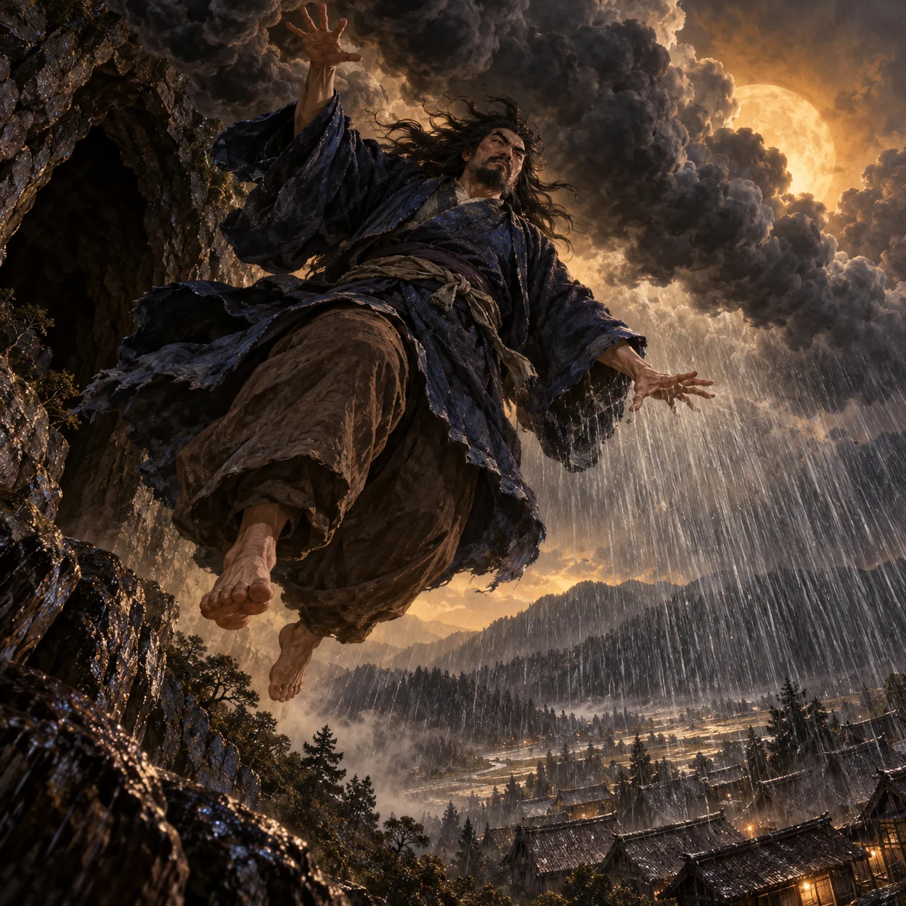
Gishiki Hachimen Daio, flying legendary local ruler of Azumino whose oni tale raises clouds and rain
Aura: Documented power or action physically changes world; no generic aura.
Native and 200px inspected: restrained humanlike robed figure with one head, two eyes/arms/hands/feet; no eight faces invented. Bare feet clearly suspended outside cave, raised hand under dense rising clouds and other over curtain of rain striking village roofs. Flight and cloud/rain command c05 are unmistakable, not ordinary standing man. Clothing/likeness explicitly editorial. No text/aura or borrowed design. All Sangar criteria pass.
Review sumberONE original square premium painterly cinematic Mitoloka illustration of Gishiki Hachimen Daio, flying legendary local ruler of Azumino whose oni tale raises clouds and rain. ANATOMY: ONE fully clothed adult male humanlike legendary figure, one head, TWO eyes, TWO arms and TWO legs; worn dark indigo robe and opaque brown trousers, wild long black hair. No detailed bodily description is recorded, so use restrained humanlike presentation of a ruler from oni legend [gishiki-hachimen-daio-c02,gishiki-hachimen-daio-c05]. NO eight faces inferred from name, no horns, fangs, wings, extra limbs or crown. MOMENT: Fly bodily down from the dark cave-mouth into open air directly above viewer, bare feet clearly suspended well off rock, one hand sweeps upward raising thick black CLOUDS from the valley, other pushes downward and a dense physical curtain of RAIN falls onto miniature village roofs below. Severe commanding focused face, wind-whipped robe, no weapon. POWER: Documented ability to FLY, RAISE CLOUDS and BRING RAIN [gishiki-hachimen-daio-c05]. Clouds are real opaque wet cloud masses, rain physically strikes roof tiles and rock; no energy rays or floating runes. SCALE & CAMERA: extreme low angle; extreme low cliff view close to hovering figure, body fills frame and floats distinctly above ground; normal man size but clouds/village lower in perspective; no ordinary standing man. LIGHT & WEATHER: one dominant low amber moon or fire source when documented, deep walnut shadows, strong rim light, tactile rain or dust. SURFACE: tactile rough skin, coarse opaque cloth, wet fur, stone and timber; premium painterly brushwork. SETTING: Gishiki cave at foot of Mount Ariake above Azumino villages [gishiki-hachimen-daio-c05]. MOOD: imposing active confrontation, never cute, calm or decorative. HARD CONSTRAINTS: no text, pseudoletters, inscriptions, logo, border, frame or watermark; no extra heads, eyes, limbs or fingers; no film, game, anime or comic designs; fully opaque clothing on humanoids; no nudity, blood or explicit gore; no generic glow aura, neon outline, floating runes or energy ribbons.
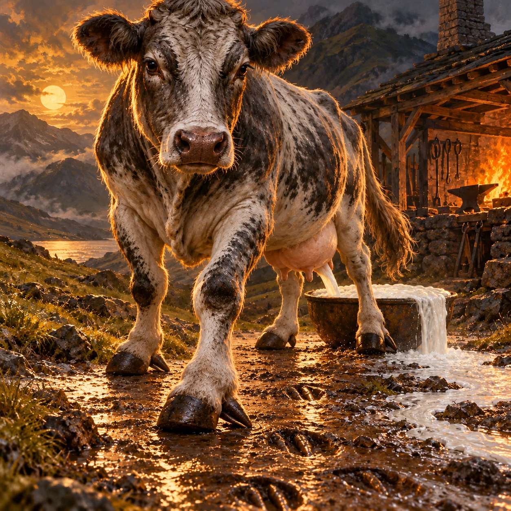
Glas Gaibhnenn, fabulous Irish cow with reversed hooves and unfailing milk
Aura: Documented anatomy and action create imposing presence without generic aura.
Native inspected: one cow/two eyes/four legs, corrected hooves show smooth heels toward viewer/head while split sharp toes extend backward toward tail (front nearest foot clearest); reverse tracks on ground. Milk pours physically to overflowing vessel. Low close stepping moment, source distinctions rather than grazing cow. No text/aura. Native plus 200px inspected; all Sangar criteria pass.
Review sumberEDIT the referenced cow image. Essential anatomical correction ONLY: turn EACH OF THE FOUR CLOVEN HOOVES around 180 DEGREES on its ankle. All four sharp cloven TOE TIPS point BACKWARD toward the cow's TAIL, opposite head direction. Viewer sees the blunt rounded HEELS at front of nearest hoof; cloven split and toe tips are visible on REAR side pointing away. Keep knee joints normal, only hooves reversed. Change camera to side-three-quarter if necessary so one near hoof in full side profile makes reverse orientation absolutely readable. No ordinary forward cow hooves. Exactly four legs, two toes each hoof. Preserve milk overflowing vessel and mountain forge. Source c07 explicitly backward hooves. Original specification: ONE original square premium painterly cinematic Mitoloka illustration of Glas Gaibhnenn, fabulous Irish cow with reversed hooves and unfailing milk. ANATOMY: ONE living bovine COW, one head, TWO eyes, FOUR legs with cloven hooves, one tail, a natural udder. Every hoof points BACKWARD relative to direction of body and head [glas-gaibhnenn-c07]. Show all FOUR legs and clear reversed hoof orientation, not broken legs. Grey mottled coat editorial; no invented extra horns, eyes, wings or magical markings. MOMENT: Stride forcefully toward camera along wet mountain track, forelegs stepping through own strange backward-pointing tracks. Close reverse-hoof detail at bottom; strong cow face dominates top. A plain wide vessel beside rear udder physically overflows with pouring white milk, broad continuous spill across ground; no milker, no infant, no calf. POWER: Unfailing profuse milk fills any vessel [glas-gaibhnenn-c01,glas-gaibhnenn-c08]; backward hooves confuse thieves through backward tracks [glas-gaibhnenn-c07]. White liquid is MILK, not light, no floating milk magic. SCALE & CAMERA: extreme low angle; side-three-quarter full-body cow fills square, hoofs large and individually traceable, avoid ordinary grazing cow; low close scale without giant body. LIGHT & WEATHER: one dominant amber fire or low moon, deep walnut shadows, hard rim light; ordinary dust, rain or spray as appropriate. SURFACE: tactile natural hair, coarse cloth, wet scales, skin, wood or stone; premium painterly brushwork, no plastic. SETTING: Mountain pasture near a smith forge, Sliabh-na-Glaise [glas-gaibhnenn-c05]. MOOD: imposing and active, never cute, calm or decorative. Helpful and living sacred figures remain benevolent, dignified and awe-inspiring. HARD CONSTRAINTS: no text, pseudoletters, inscriptions, logo, border, frame or watermark; no extra heads, eyes, limbs or fingers; no film, game, anime or comic designs; fully opaque clothing on humanoids; no nudity, blood or explicit gore; no generic glow aura, neon outline, floating runes or energy ribbons.
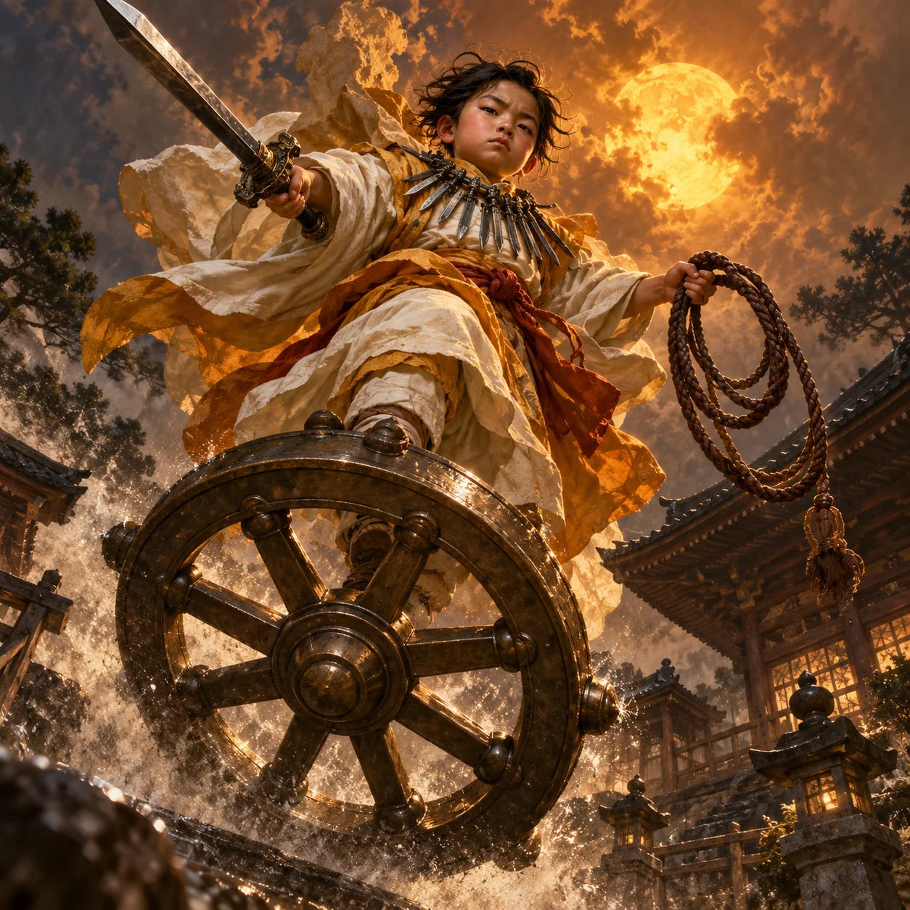
Goho doji, revered Japanese Buddhist child-form dharma guardian
Aura: Documented anatomy and action create imposing presence without generic aura.
Native inspected: one child guardian fully clothed, two hands holding sword and noose, collar of small swords distinct; feet stand on solid eight-spoke Dharma wheel in flight. Noble serious face and dramatic forward movement, not monstrous. Temple setting, physical displaced grit/wind, no aura, writing or borrowed designs. Attributes legible at 200px; all Sangar criteria pass.
Review sumberONE original square premium painterly cinematic Mitoloka illustration of Goho doji, revered Japanese Buddhist child-form dharma guardian. ANATOMY: ONE young boy guardian, one head, TWO eyes, TWO arms and TWO legs, fully opaque heavy cream and saffron robes; collar of small real steel SWORDS around neck, one large sword held in RIGHT hand and a coiled NOOSE in LEFT hand [goho-doji-c02]. Blades point outward safely, no contact wounds. Boy rides standing on ONE large Wheel of Dharma [goho-doji-c03], a solid antique bronze wheel with eight plain spokes, no lettering. No horns, wings, fangs or adult body. MOMENT: Fly forcefully down toward viewer on the tilted solid Dharma wheel, child face serene but intensely resolved, lift sword diagonally in protective command and extend coiled noose; robes sweep in physical wind. No battle victim or explicit violence. POWER: Flying through air riding a Wheel of Dharma [goho-doji-c03]; guardian of dharma [goho-doji-c01]. No invented glowing energy, lightning or fire. SCALE & CAMERA: extreme low angle; very low close camera beneath wheel; guardian face, sword collar, sword and noose clearly distinct, wheel solid and dominant; no cosmic giant child. LIGHT & WEATHER: one dominant amber fire or low moon, deep walnut shadows, hard rim light; ordinary dust, rain or spray as appropriate. SURFACE: tactile natural hair, coarse cloth, wet scales, skin, wood or stone; premium painterly brushwork, no plastic. SETTING: Air above a Japanese Buddhist temple approach, uninscribed wooden roofs [goho-doji-c01,goho-doji-c03]. MOOD: imposing and active, never cute, calm or decorative. Helpful and living sacred figures remain benevolent, dignified and awe-inspiring. HARD CONSTRAINTS: no text, pseudoletters, inscriptions, logo, border, frame or watermark; no extra heads, eyes, limbs or fingers; no film, game, anime or comic designs; fully opaque clothing on humanoids; no nudity, blood or explicit gore; no generic glow aura, neon outline, floating runes or energy ribbons.
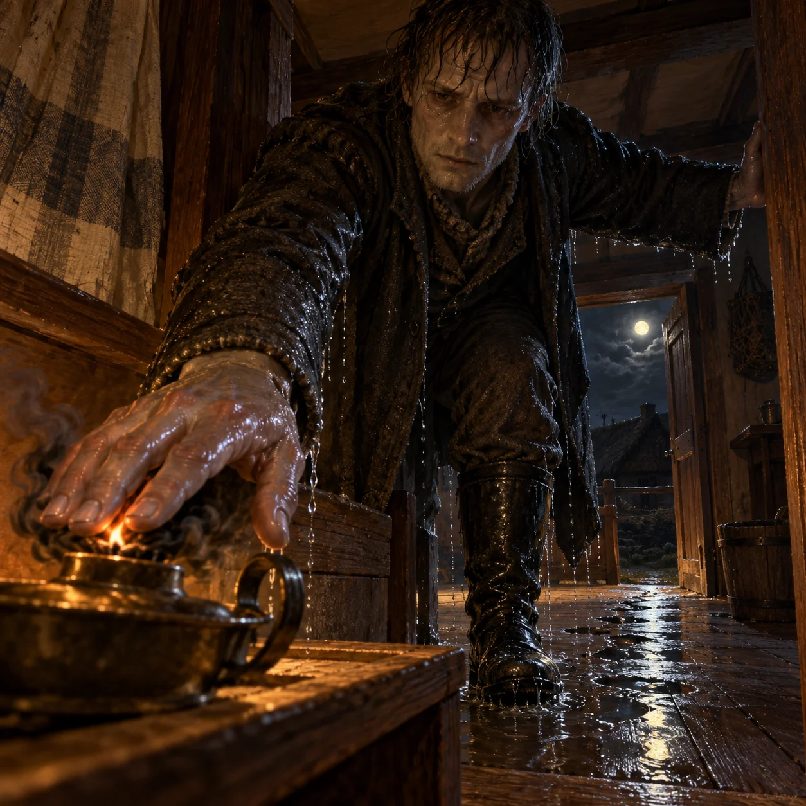
Gonger, drowned North Frisian revenant bringing news of death
Aura: Documented anatomy and action create presence without generic aura.
Native inspected: pallid drenched sailor revenant leans into bedside view, one bare hand directly smothers flame without injury, other braces door; water streams from heavy boots and coat across floor. Two arms, one visible boot and other leg naturally behind. Source c11 hand-extinguishing and saltwater manifestation, solemn c09 disposition rather than invented monster face. Native and 200px strong intrusive close encounter; no text/aura. All Sangar criteria pass.
Review sumberONE original square premium painterly cinematic Mitoloka illustration of Gonger, drowned North Frisian revenant bringing news of death. ANATOMY: ONE drowned adult male sailor revenant, one head, TWO eyes, TWO arms and TWO legs, fully clothed in soaked rough dark wool coat, trousers and heavy pulled-up sea boots FULL OF WATER [gonger-c03,gonger-c10,gonger-c11]. Pallid human face, no decay, wounds, glowing eyes or invented undead anatomy. Salt water runs abundantly from boots and sleeves, wet hair plastered to brow. MOMENT: Lean over a wooden sleeping alcove toward viewer and extend one dripping hand directly onto a small oil-lamp flame to PUT IT OUT; flame is visibly being smothered by his palm with last orange ember and thin black smoke. Other arm braces doorway. Eyes intensely solemn, mouth closed. Heavy boots leave a long unmistakable trail and puddle of salt water across dry floor. No sleeping person shown. POWER: Drowned revenant puts out light by hand, visits relatives and leaves salt water [gonger-c03,gonger-c10,gonger-c11]. No invented magic; impossible bare-hand extinguishing and continuous seawater footprint are source manifestations. SCALE & CAMERA: extreme low angle; close low bedside confrontation, dripping hand/lamp/face occupy square; spectral solemnity rather than ordinary standing sailor. LIGHT & WEATHER: one dominant low amber moon or lamp, deep walnut shadows, strong rim light, ordinary water spray or dust as appropriate. SURFACE: tactile wet skin, coarse cloth, scales, hair, old wood and stone; premium painterly brushwork. SETTING: North Frisian house of kin at night [gonger-c03,gonger-c11]. MOOD: imposing and active, never cute, calm or decorative. Sacred and benevolent figures remain dignified and protective. HARD CONSTRAINTS: no text, pseudoletters, inscriptions, logo, border, frame or watermark; no extra heads, eyes, limbs or fingers; no film, game, anime or comic designs; fully opaque clothing on humanoids; no nudity, blood or explicit gore; no generic glow aura, neon outline, floating runes or energy ribbons.
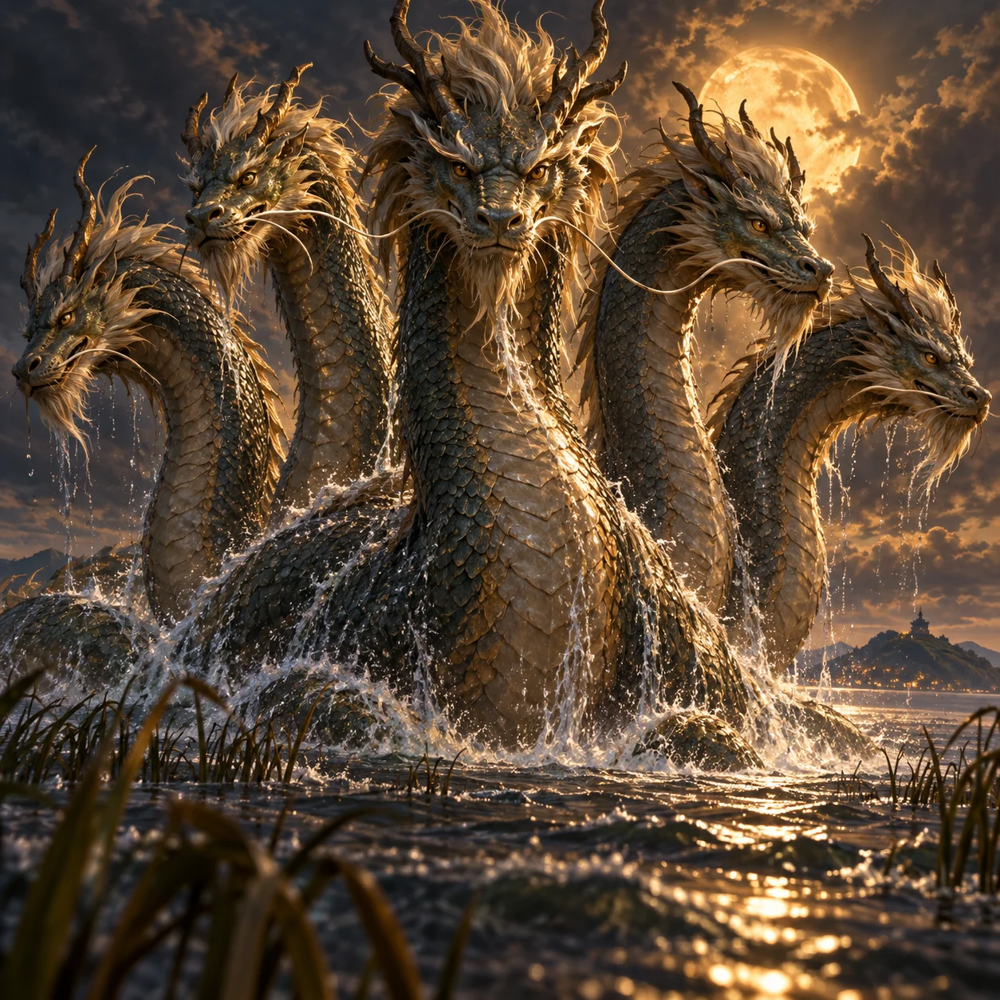
Gozuryu, revered five-headed dragon protector of Kamakura
Aura: Documented anatomy and action create presence without generic aura.
Native and 200px inspected: exactly FIVE separate dragon heads/necks in clear 2-left/1-centre/2-right fan, single continuous scaled body, limbs underwater. Five faces dignified protective gaze, no attack, fire or invented disaster effects. Rising water physically spills from scales, low marsh perspective, no text or aura. All seven Sangar criteria pass.
Review sumberONE original square premium painterly cinematic Mitoloka illustration of Gozuryu, revered five-headed dragon protector of Kamakura. ANATOMY: ONE enormous serpentine dragon body with EXACTLY FIVE separate long necks, each ending in ONE dragon head; total FIVE heads and TEN eyes [gozuryu-c06]. Fan arrangement: two heads left, one largest centre, two heads right, clear dark gaps between each neck. Each head has a dignified dragon face with small swept horns, not evil screaming. ONE continuous scaled body/tail; limbs underwater, none added or duplicated. No wings. MOMENT: Rise forcefully from marsh water toward viewer, five necks arch in a protective wall, all five faces clearly visible, central head inclines to regard viewer. Physical water pours off scales; huge ripples push reeds outward. No victims, no sacrifice, no attack. POWER: Formerly cruel dragon reformed into god protecting people from disaster [gozuryu-c04,gozuryu-c06]. Only physical emergence and waves, no invented disaster-control fire or lightning. SCALE & CAMERA: extreme low angle; low water-level close view, FIVE large heads fan across square, marsh reeds tiny below body; fivehead silhouette readable at 200pixels. LIGHT & WEATHER: one dominant low amber moon or lamp, deep walnut shadows, strong rim light, ordinary water spray or dust as appropriate. SURFACE: tactile wet skin, coarse cloth, scales, hair, old wood and stone; premium painterly brushwork. SETTING: Former lake or nearby marsh of Kamakura with distant Enoshima coast [gozuryu-c01,gozuryu-c06]. MOOD: imposing and active, never cute, calm or decorative. Sacred and benevolent figures remain dignified and protective. HARD CONSTRAINTS: no text, pseudoletters, inscriptions, logo, border, frame or watermark; no extra heads, eyes, limbs or fingers; no film, game, anime or comic designs; fully opaque clothing on humanoids; no nudity, blood or explicit gore; no generic glow aura, neon outline, floating runes or energy ribbons.
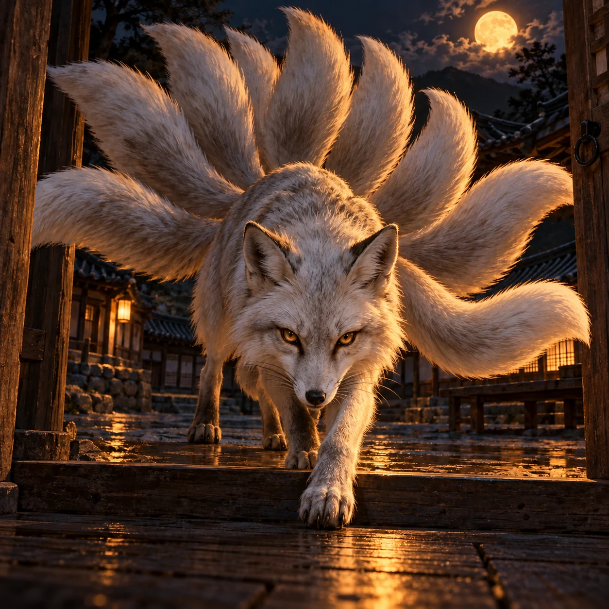
Gumiho, uncanny Korean nine-tailed fox spirit
Aura: Documented anatomy and action create presence without generic aura.
Native and 200px inspected: one fox head/two eyes, four natural canine legs, exactly NINE distinct furry tails/tips: lower left one plus seven across upper fan and added lower-right ninth. One rump; no duplication or extra heads. Cunning forward prowl at midnight school, no invented visible spell. No text/aura, all Sangar criteria pass.
Review sumberEDIT this Gumiho image. Preserve fox body, four paws, single fox head, village school and light. There are currently EIGHT visible tails. Add exactly ONE additional large furry tail extending LOW TO VIEWER-RIGHT from the rump, below the existing rightmost horizontal tail, with its own separated tip around right edge midheight. Total EXACTLY NINE tails and NINE distinct tips, all attach naturally to one rump. Do not remove or merge any existing tail. Do not add a tenth. Keep threatening prowl. No text/aura. Original specification: ONE original square premium painterly cinematic Mitoloka illustration of Gumiho, uncanny Korean nine-tailed fox spirit. ANATOMY: ONE living fox body, ONE fox head, TWO eyes, FOUR canine legs and EXACTLY NINE long thick furry fox tails [gumiho-c11]. Nine tails attach to one rump, fanning separately behind body in a clear arc; one tail at far left, then seven evenly separated tails, one at far right. NO extra tail tips, human face, wings, horns or multiple heads. White-grey fox coat editorial, sharp natural fox muzzle and ears. MOMENT: Crouch at midnight village-school threshold and prowl toward viewer with one forepaw reaching across sill, head lowered in cunning focused gaze. Fan all NINE tails behind like a physical mass of fur, distinct tips not crossing, no floating jewel needed. POWER: Uncanny sorcerous fox tradition [gumiho-c11], fox visits school at midnight in transformation tale [gumiho-c10]. Choose fox before human guise; no visible magic invented. SCALE & CAMERA: extreme low angle; low close three-quarter body, 9tailfan fills upper background, head/paws foreground; normal fox size beside wooden threshold. LIGHT & WEATHER: one dominant low amber moon or lamp, deep walnut shadows, strong rim light, ordinary water spray or dust as appropriate. SURFACE: tactile wet skin, coarse cloth, scales, hair, old wood and stone; premium painterly brushwork. SETTING: Korean village school at midnight [gumiho-c10]. MOOD: imposing and active, never cute, calm or decorative. Sacred and benevolent figures remain dignified and protective. HARD CONSTRAINTS: no text, pseudoletters, inscriptions, logo, border, frame or watermark; no extra heads, eyes, limbs or fingers; no film, game, anime or comic designs; fully opaque clothing on humanoids; no nudity, blood or explicit gore; no generic glow aura, neon outline, floating runes or energy ribbons.
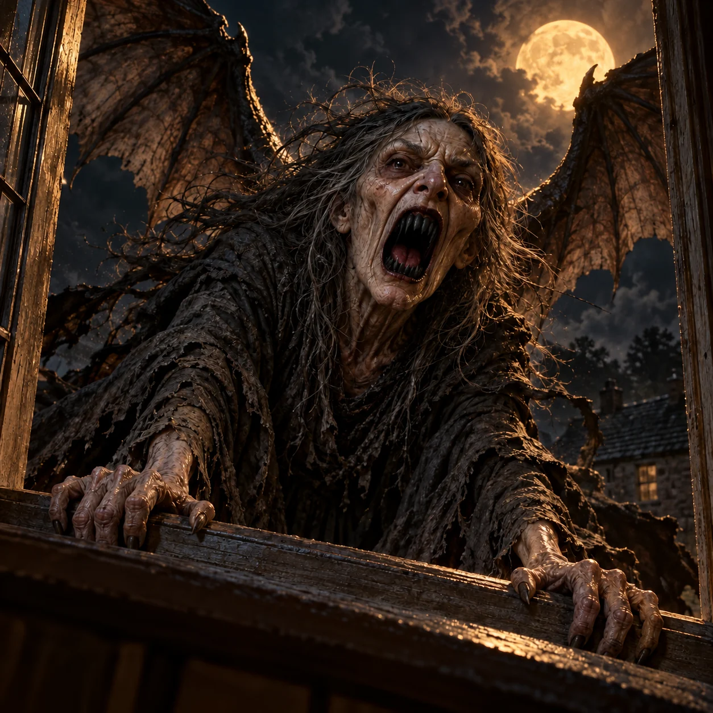
Gwrach y Rhibyn, Welsh winged death-herald spirit
Aura: Documented anatomy and action create presence without generic aura.
Native and 200px inspected: one pale haggard face, tangled hair, two shrivelled hands on sill, two leathery wings; corrected long teeth are black enamel. Window wailing pose c03, no victim. Fully opaque robe, no text/gore/aura, no borrowed design. All seven Sangar criteria pass.
Review sumberEDIT the referenced Gwrach image. Preserve entire composition, anatomy, two wings/two arms, shrivelled hands, pale face, moon and window. Change ONLY all teeth upper and lower: solid DEEP MATTE BLACK ENAMEL, pure charcoal black fang surfaces, no pale ivory, no brown, no golden tips. Shine only minimal grey rim so black fang silhouettes read against burgundy gums and tongue. Long teeth remain same size and count. Source c02 black teeth. No other changes. Original specification: ONE original square premium painterly cinematic Mitoloka illustration of Gwrach y Rhibyn, Welsh winged death-herald spirit. ANATOMY: ONE ugly pale old female harpy-like humanoid, ONE head, TWO eyes, TWO shrivelled human arms, TWO human legs beneath fully opaque ragged black-grey robe, EXACTLY TWO leathery batlike wings from back; tangled withered grey-black hair and conspicuous LONG BLACK TEETH [gwarch-y-rhybin-c02]. Wings are additional to two arms, not wing-arms. No horns, extra heads or glowing eyes. MOMENT: Swoop up against a dark house window toward viewer, both shrivelled hands clamp outside sill, leathery wings spread behind, head thrust forward and mouth open in a piercing wail revealing long black teeth. No person or victim shown. Robe and tangled hair whip in ordinary air. POWER: At night she comes to dying person's window and calls their name [gwarch-y-rhybin-c03]; depict wailing gesture only, no written words, soul beam or invented death effects. SCALE & CAMERA: extreme low angle; from just inside window low angle, close head/blackteeth/hands fill foreground and wings dominate outer darkness. LIGHT & WEATHER: one dominant low amber moon, deep walnut shadows, strong rim light, ordinary water spray or dust. SURFACE: tactile wet skin, coarse cloth, scales, hair, old wood and stone; premium painterly brushwork. SETTING: Welsh house window at night [gwarch-y-rhybin-c03]. MOOD: imposing and active, never cute, calm or decorative. Sacred protective figures remain dignified and reverential. HARD CONSTRAINTS: no text, pseudoletters, inscriptions, logo, border, frame or watermark; no extra heads, eyes, limbs or fingers; no film, game, anime or comic designs; fully opaque clothing on humanoids; no nudity, blood or explicit gore; no generic glow aura, neon outline, floating runes or energy ribbons.
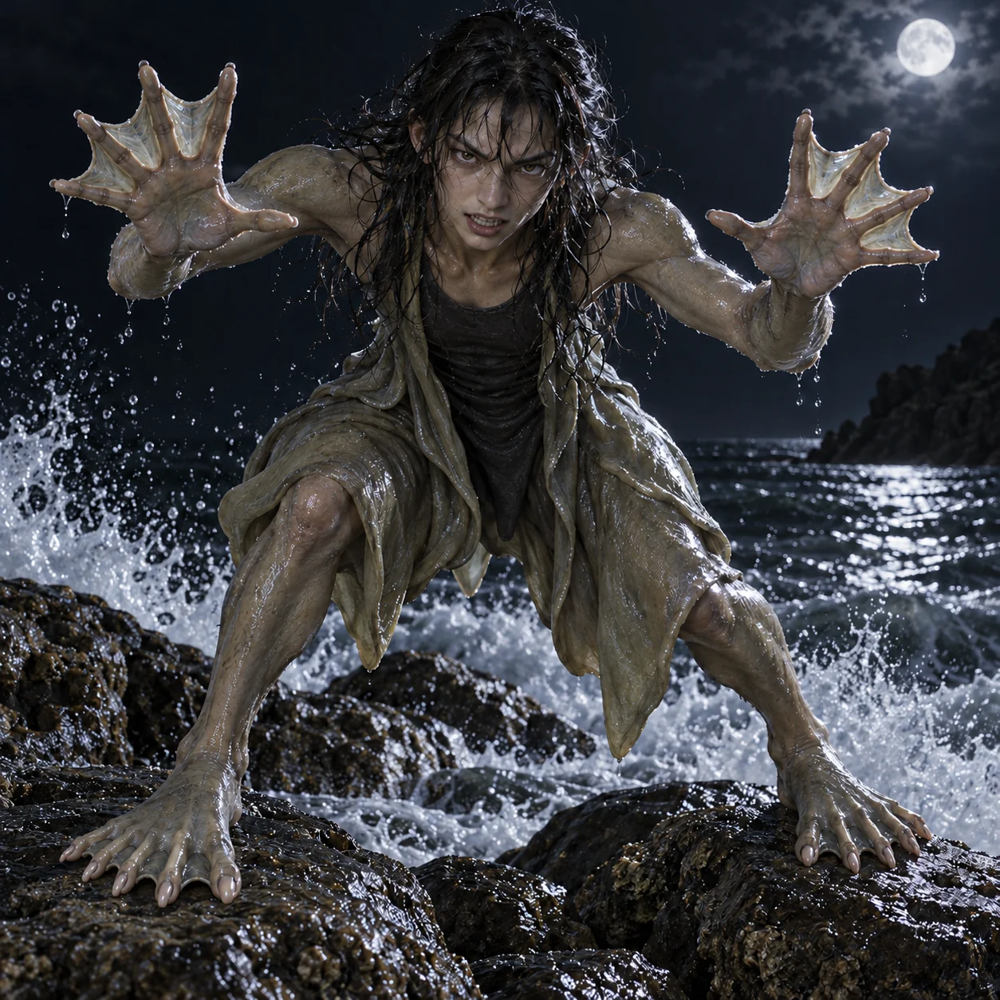
Untameable webbed sea humanoid with hanging hakama-like living skin
Aura: No generic aura. Presence comes from documented anatomy and action: hairen-c01, hairen-c02, hairen-c03, hairen-c05.
Native1254,200px and separately enlarged crops of ALL FOUR extremities inspected. Prior lower-left-foot count was wrong and is preserved in rejected history. Corrected LOWER-LEFT foot now has EXACTLY FIVE visible separate nail-bearing tips at approximately native x83,114,157,210,286 from outer smallest to inner big toe, with FOUR connecting webs; no hidden toe inferred. LOWER-RIGHT foot has FIVE visible nails/toes and FOUR webs. LEFT-FRAME HAND has thumb plus FOUR fingers=FIVE digits and FOUR webs; RIGHT-FRAME HAND has thumb plus FOUR fingers=FIVE digits and FOUR webs. Counts all5/5/5/5. Rest visually preserved: one head/two eyes/two arms/two legs, hanging living skin and opaque undergarment, feral confrontation, separate hands and feet, sea rocks/night. No added fins/gills, aura, text or gore. Seven Sangar checks pass.
Review sumberEDIT THE REFERENCED IMAGE. Change ONLY the LOWER-LEFT FOREGROUND FOOT, the creature's RIGHT FOOT at native1254 coordinates x70-330,y960-1140. Preserve every other feature exactly: face, hair, both webbed hands, OTHER foot at lower right, all skin folds, opaque black clothing, pose, moon, sea, rocks, spray, framing and light. Do not redraw the scene. The defective lower-left foot currently has only FOUR toes. REPLACE that foot's forefoot with EXACTLY FIVE CLEARLY VISIBLE WEBBED TOES and FIVE INDIVIDUAL NAILS: ONE BIG INNER TOE on the RIGHT side of that lower-left foot (toward center of image), then FOUR progressively smaller toes to its LEFT. Do not hide or merge a toe. Spread all FIVE toes in a clear horizontal FAN, each end with its own single distinct nail. Exactly FOUR visible skin-web spaces connect the five neighboring toes. The existing humanlike ankle, wet grey skin texture, rock contact and night lighting must match seamlessly. Keep the big toe at image-right, add the missing smallest outer toe at far image-left, extending foot width a little if necessary. There must be FIVE tips, FIVE nails, FOUR webs, no sixth toe. No extra leg or detached toe. Source hairen-c02 webbed feet, humanlike c01; Claude requires five toes per foot. Do not add labels, numbers, dots, text, drawings, arrows, graphic annotations, aura or glow. The correction is actual painted anatomy only. Original source-directed scene context (preserve this appearance): ONE original square premium painterly cinematic Mitoloka illustration of Hairen, the untameable sea humanoid. This is a COMPLETE REDRAW with new, clean, anatomically separated composition. ANATOMY: ONE humanlike head, TWO eyes, TWO arms, TWO legs [hairen-c01]. BOTH hands clearly display FIVE WEBBED digits: one separate thumb and four fingers, thin living skin membrane BETWEEN all digits. BOTH feet clearly display FIVE webbed toes including large inner toe. Hands never touch or overlap feet. Broad loose living grey-olive SKIN folds hang like hakama trousers over hips/thighs [hairen-c02,c03]. Fully opaque plain charcoal undergarment covers torso and pelvis under skin flaps. Not woven trousers, no seams or hems on skin. Feral humanlike face with bared ordinary teeth, wet tangled hair, narrowed defiant eyes; no fins, gills, horns or pointed ears. MOMENT: Surge upright out of the sea onto a broad flat rock toward viewer, back bent aggressively forward, shoulders hunched. Both arms held outward at SHOULDER HEIGHT, palms toward viewer, all five webbed digits spread widely and separated in silhouette. Both legs apart below hips. Both feet planted on two separated foreground rocks with toes facing viewer, visibly attached through ankles to separate legs. Hands in upper half, feet in lower corners: four extremities never overlap. Make every digit countable; leave uncluttered dark background behind each hand and foot. POWER: No magic. Fierce untameable character [hairen-c05] expressed as defiant bodily confrontation. Ordinary surf splashes against rocks. SCALE & CAMERA: Slight low angle, full tightly framed figure, face upper central, hands beside face, feet bottom, no giant scale. LIGHT & WEATHER: one hard cold moon side-light against deep walnut black night, strong edge light on web membranes, ordinary sea spray. SURFACE: Wet slick living skin, heavy glossy skin folds, coarse opaque charcoal undergarment, salt-wet rock. SETTING: Sea coast rocks at night, dark sea behind [hairen-c01,c02]. MOOD: dangerous uncanny sea being confronting viewer, never ordinary relaxed man. HARD CONSTRAINTS: no text, lettering, pseudoletters, logo, border, watermark, gore or nudity; no extra heads, limbs or digits; no copyrighted film/game/anime/comic design; no generic glowing aura, neon outlines, energy ribbons or floating runes.
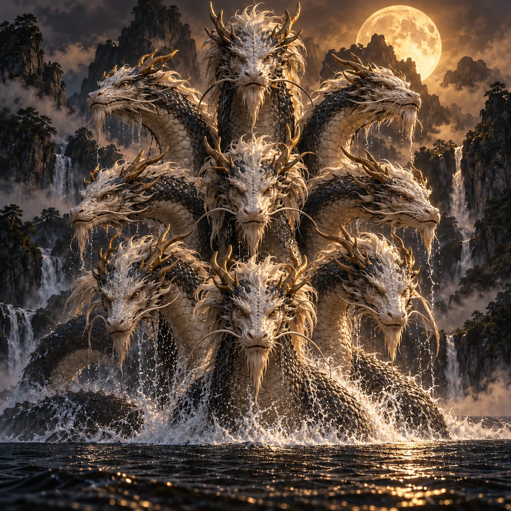
Hakusan Gongen, sacred nine-headed dragon of Taicho founding legend
Aura: Documented anatomy and action create presence without generic aura.
Native and 200px inspected: EXACTLY NINE distinct dragon heads arranged3upper+3middle+3lower; corrected lower-centre ninth neck and face unobscured. One scaled body, limbs underwater, dignified sacred revelation with ordinary water spilling. No eleven-faced mix, fire, invented element power, text or aura. All Sangar criteria pass.
Review sumberEDIT referenced sacred Hakusan dragon image. It currently has EIGHT heads:top3,middle3,bottom2. Add exactly ONE NEW NINTH HEAD AND NECK in LOWER CENTRE foreground between existing two lower heads. Put new ninth face at xcentre and y70percent, BELOW current middle centre face, connect its neck to same body. Preserve all eight existing heads unchanged and clearly visible. Final layout THREE TOP, THREE MIDDLE, THREE LOWER = EXACTLY NINE heads and nine separate necks, not ten. No extra body/limbs. Preserve reverential expression, water, light and scales. No text/aura. Original specification: ONE original square premium painterly cinematic Mitoloka illustration of Hakusan Gongen, sacred nine-headed dragon of Taicho founding legend. ANATOMY: ONE continuous serpentine dragon body with EXACTLY NINE distinct necks, each ends in ONE dragon head, total NINE heads [hakusan-gongen-c02]. Fan in THREE clearly separated tiers: LOWER row THREE heads, MIDDLE row THREE heads, UPPER row THREE heads, all nine faces plainly visible with dark gaps. Dragon has wet ivory and charcoal scales, small swept antlers editorial, one tail below, limbs remain underwater. No wings, not eleven heads. MOMENT: Rise from dark mountain water toward viewer, nine necks unfurl in staggered protective fan, heads bow forward solemnly in revelation, water pours off scales. Central upper face meets viewer. No roaring attack, fire, storm magic or human victims. POWER: Taicho founding legend reveals nine-headed dragon identifying itself with Izanami and Hakusan [hakusan-gongen-c02]. Revealed sacred form and physical water only, no elemental power inferred. SCALE & CAMERA: extreme low angle; low mountain-water perspective, nine heads dominate frame arranged3+3+3withdarkgaps; full head count legible at200px. LIGHT & WEATHER: one dominant low amber moon, deep walnut shadows, strong rim light, ordinary water spray or dust. SURFACE: tactile wet skin, coarse cloth, scales, hair, old wood and stone; premium painterly brushwork. SETTING: Mountain Hakusan revelation context [hakusan-gongen-c01,hakusan-gongen-c02]. MOOD: imposing and active, never cute, calm or decorative. Sacred protective figures remain dignified and reverential. HARD CONSTRAINTS: no text, pseudoletters, inscriptions, logo, border, frame or watermark; no extra heads, eyes, limbs or fingers; no film, game, anime or comic designs; fully opaque clothing on humanoids; no nudity, blood or explicit gore; no generic glow aura, neon outline, floating runes or energy ribbons.
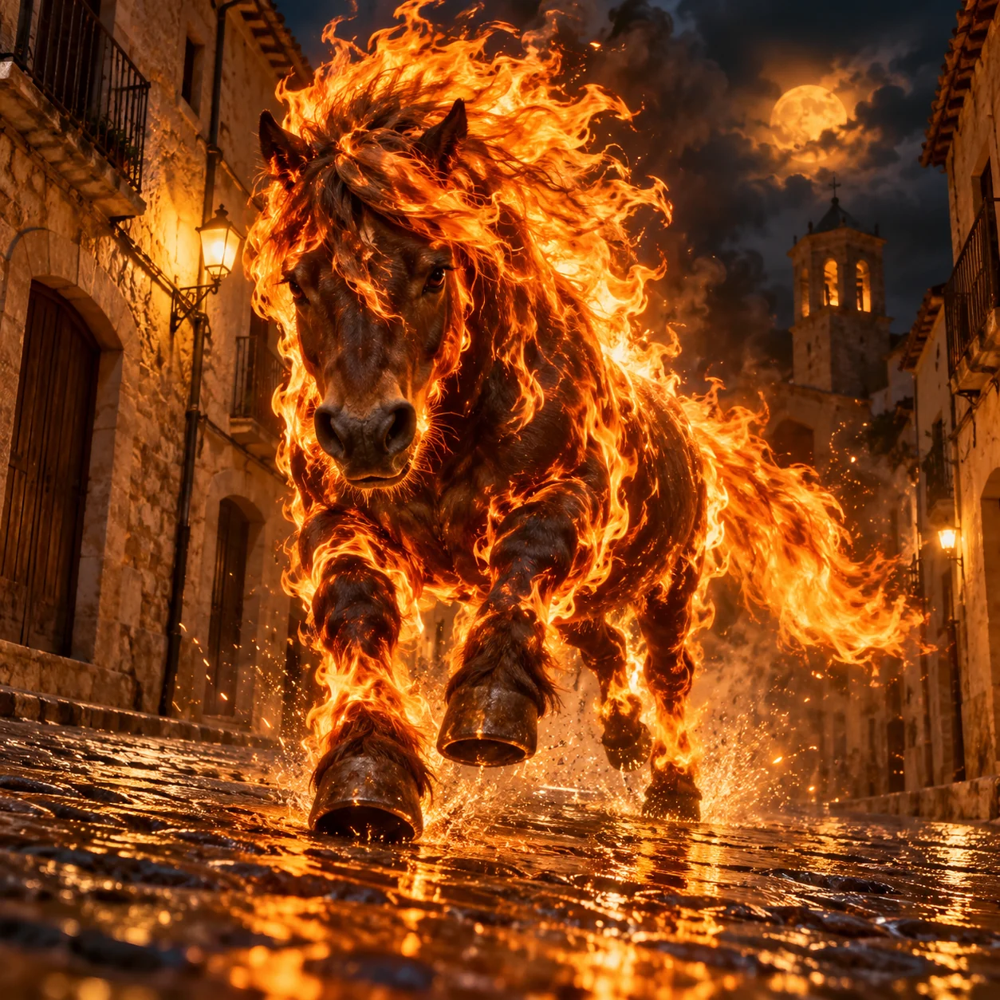
Haqueta de foc, Valencian supernatural pony wrapped in fire
Aura: Documented power or action physically changes world; no generic aura.
Native and 200px inspected: short sturdy pony with one head/two eyes, four legs in gallop (far hind hoof small beneath torso), physical flame wraps body/mane/tail and casts orange light on wet street. No mouth/eye fire borrowed from Comte Arnau, no rider. Normal pony size against doorways, imposing charge. No text/aura beyond documented fire. All Sangar criteria pass.
Review sumberONE original square premium painterly cinematic Mitoloka illustration of Haqueta de foc, Valencian supernatural pony wrapped in fire. ANATOMY: ONE living small PONY with one head, TWO eyes, FOUR legs, one mane and one tail; whole pony body is wrapped in real ORANGE FLAMES [haqueta-de-foc-c01]. Short sturdy pony proportions, dark coat under flames. No horns, wings, skeletal face or rider. Fire consumes no flesh; no injuries. Flames arise from body surface itself, not decorative aura ring. MOMENT: Gallop powerfully down village street toward viewer at midnight, head lowered in forceful charge, nostrils flared, front hooves reaching and hind hooves kicking, flaming mane and tail stream backward. Orange fire physically illuminates wet cobbles, casts sparks and thick smoke into air. All four legs distinct. POWER: It appears ablaze at midnight [haqueta-de-foc-c01], roams Beneixama village streets making people stay inside [haqueta-de-foc-c04]. Visible body flames are documented, not generic magic glow; no fire from eyes/mouth borrowed from separate Comte Arnau c06. SCALE & CAMERA: extreme low angle; low street camera, entire stout pony fills square, doorways show normal pony size, no giant horse. LIGHT & WEATHER: one dominant low amber moon or fire source when documented, deep walnut shadows, strong rim light, tactile rain or dust. SURFACE: tactile rough skin, coarse opaque cloth, wet fur, stone and timber; premium painterly brushwork. SETTING: Empty stone street in Beneixama at midnight [haqueta-de-foc-c04]. MOOD: imposing active confrontation, never cute, calm or decorative. HARD CONSTRAINTS: no text, pseudoletters, inscriptions, logo, border, frame or watermark; no extra heads, eyes, limbs or fingers; no film, game, anime or comic designs; fully opaque clothing on humanoids; no nudity, blood or explicit gore; no generic glow aura, neon outline, floating runes or energy ribbons.
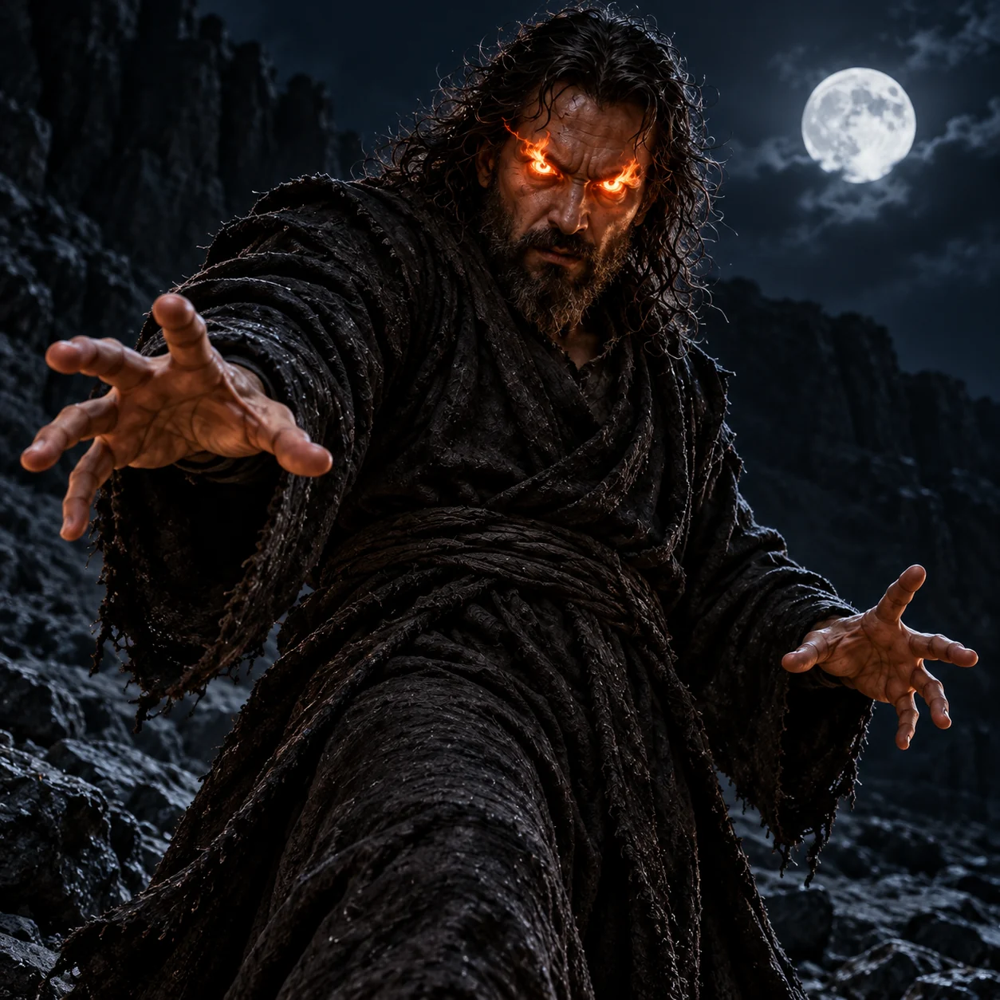
Hauras or Flauros, goetic great duke in human shape with fiery eyes
Aura: Only flaming eyes and terrible countenance c02/c05 create supernatural force; no body aura or destructive scene.
Native and 200px inspected: all fort/buildings, timber flames, embers and landscape smoke removed. Human form has one terrible face, two eyes emitting local real flame c02/c05, two reaching hands with five fingers, opaque dark robe. Neutral black rocks and natural cool moonlight; no other fire or power effect. Tight confrontational reaching pose remains threatening. No text/aura/borrowed design. All Sangar criteria pass.
Review sumberEDIT the referenced Hauras illustration. Preserve his exact human face, terrible countenance, TWO physically flaming eyes, TWO arms/hands, black opaque robe and reaching forward stride. REMOVE ALL burning buildings, fort, towers, fences, timber, landscape flames, sparks, embers and smoke. Replace background with almost BLACK natural empty rocky ground and a dark unbuilt cliff, lit by ONE cool natural moon. No architecture anywhere. Tighten composition toward waist-up/three-quarter so fiery-eyed face and foreground reaching hand dominate square, still active confrontational low angle. The ONLY flames in the entire picture are short real tongues of fire directly in TWO eyes [hauras-c02,hauras-c05]. Eye flames cast a little warm local light on brows only; no body aura, neon lines or beams. No horns, wings or added anatomy. No text, inscription, logo, border, watermark, nudity, gore, or borrowed film/game/comic design. One human head, two eyes, two arms with five fingers on each hand; opaque coarse robe. The black rocky setting and natural moonlight are editorial neutral staging, no supernatural destruction is shown.
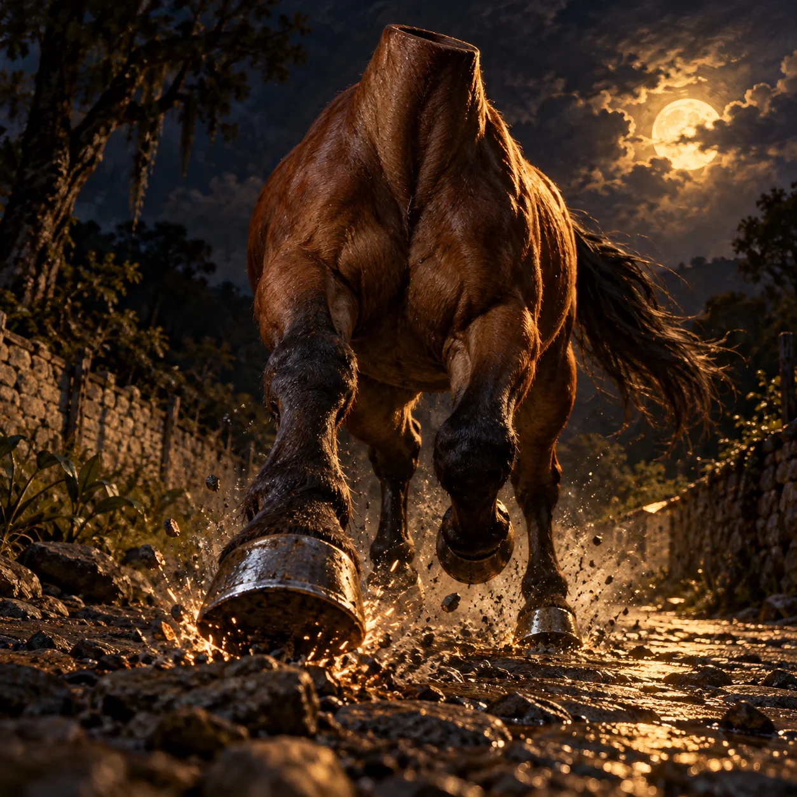
ONE strong mule torso, exactly FOUR legs with iron horseshoes and ONE tail; neck ends smoothly with NO HEAD, NO ears, NO eyes, NO mouth and NO gore. [headless-mule-c03,headless-mule-c07,headless-mule-c11]
Aura: Distinctive anatomy headless-mule-c03,headless-mule-c07,headless-mule-c11 and documented action headless-mule-c03,headless-mule-c06.
Native and200px inspected: headless strong mule, four iron-shod legs and one tail, no head/eyes/ears/mouth or gore. Violent gallop c06 with iron shoes c03 striking stones; sparks are mundane contact, not mouth fire due c05/c07 conflict. Dominant uncanny subject at200px; no aura or text. All seven Sangar checks pass.
Review sumberONE original square premium painterly cinematic Mitoloka illustration of Headless Mule, the strong headless mule of Brazilian folklore. ANATOMY: ONE strong mule torso, exactly FOUR legs with iron horseshoes and ONE tail; neck ends smoothly with NO HEAD, NO ears, NO eyes, NO mouth and NO gore. [headless-mule-c03,headless-mule-c07,headless-mule-c11] MOMENT: Gallop violently straight toward viewer, front iron-shod hooves striking stones, neck stump in silhouette. POWER: No fire emitted because claims c05 locates it at nostrils/mouth conflicting with chosen headless form; ordinary sparks ONLY from iron shoes striking stone, no supernatural glow. [headless-mule-c03,headless-mule-c06] SCALE & CAMERA: extreme low close angle, subject fills80% of square; natural scale unless giant explicitly documented. Important features clear at200pixels. LIGHT & WEATHER: one dominant warm moonbreak/sunset or documented lantern, dramatic rim light, deep walnut shadows, natural moisture/dust. SURFACE: tactile natural skin/fur/scales/wood where appropriate, opaque coarse textiles, rough stone, original visible painterly brushwork. SETTING: Dark Brazilian parish road at night, no visible church inscriptions. [headless-mule-c08] MOOD: dangerous for hostile beings, awe-inspiring and respectful for gods, guardians and living traditions, never cute/calm/decorative. HARD CONSTRAINTS: no text/lettering/logo/border/frame/watermark; no extra heads/limbs/fingers; no borrowed film/game/anime/comic design; no nudity or explicit gore; no generic glow aura, neon outlines, energy ribbons, floating runes.
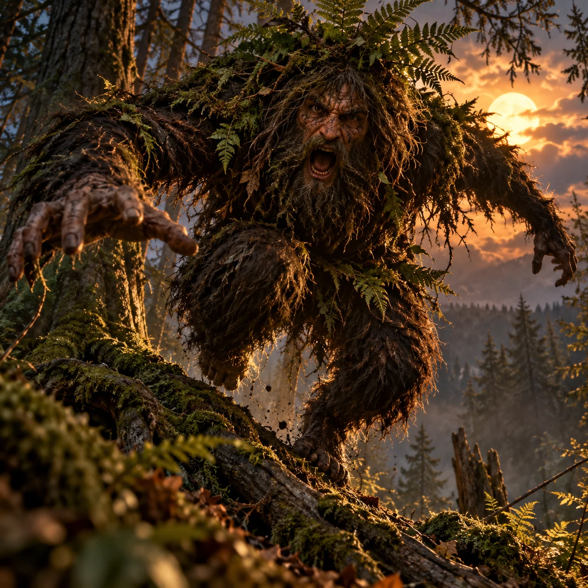
ONE male head with fierce eyes, TWO arms and TWO legs, entire body densely covered in dark fur and moss, conspicuous bunch of ferns on head. Fully opaque fur conceals body. [hejkal-c02]
Aura: Distinctive anatomy hejkal-c02 and documented action hejkal-c01,hejkal-c02.
Native and200px inspected: one human wild-man head, two arms/two legs, densely fur/moss-covered body and fern bunch on head c02. Human size from tree/ferns, forward leap with terrifying shout c01/c02. Opaque fur, no horns/extra limbs, aura/text/gore; threatening action reads at200px. All seven Sangar checks pass.
Review sumberONE original square premium painterly cinematic Mitoloka illustration of Hejkal, the human-sized forest wild-man demon of Czech folklore. ANATOMY: ONE male head with fierce eyes, TWO arms and TWO legs, entire body densely covered in dark fur and moss, conspicuous bunch of ferns on head. Fully opaque fur conceals body. [hejkal-c02] MOMENT: Leap toward viewer from a tree root, limbs splayed, mouth in terrifying halloo. POWER: No magic effects; documented terrifying call and pouncing attack conveyed through open mouth and active leap. [hejkal-c01,hejkal-c02] SCALE & CAMERA: extreme low close angle, subject fills80% of square; natural scale unless giant explicitly documented. Important features clear at200pixels. LIGHT & WEATHER: one dominant warm moonbreak/sunset or documented lantern, dramatic rim light, deep walnut shadows, natural moisture/dust. SURFACE: tactile natural skin/fur/scales/wood where appropriate, opaque coarse textiles, rough stone, original visible painterly brushwork. SETTING: Czech forest near Plzeň; branches/ferns establish normal human size. [hejkal-c02] MOOD: dangerous for hostile beings, awe-inspiring and respectful for gods, guardians and living traditions, never cute/calm/decorative. HARD CONSTRAINTS: no text/lettering/logo/border/frame/watermark; no extra heads/limbs/fingers; no borrowed film/game/anime/comic design; no nudity or explicit gore; no generic glow aura, neon outlines, energy ribbons, floating runes.
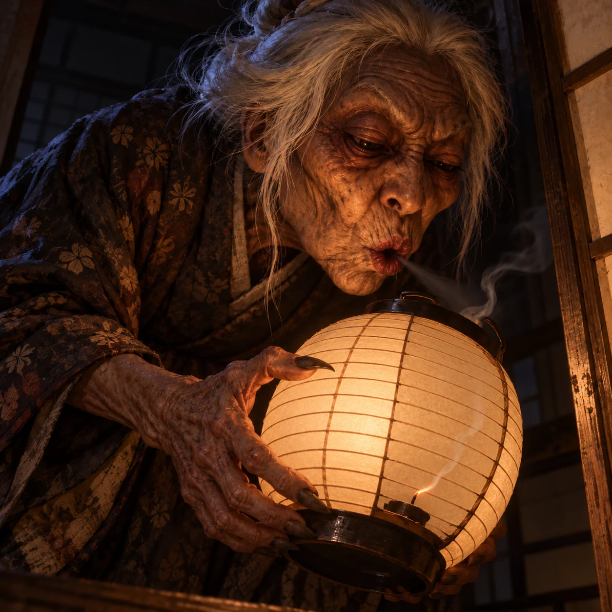
ONE grotesquely wrinkled old woman with white hair, one head, two eyes, TWO arms; fully opaque worn kimono. [hikeshibaba-c02,hikeshibaba-c03]
Aura: Distinctive anatomy hikeshibaba-c02,hikeshibaba-c03 and documented action hikeshibaba-c02,hikeshibaba-c05.
Native and200px inspected after removing lantern marks: grotesque white-haired old woman, one head/two arms, opaque kimono. Blowing pursed lips, candle dying to ember and smoke c02/c05; blank lantern no text. Intense low close face/action reads uncanny dangerous at200px, no extra anatomy, aura or gore. All seven Sangar checks pass.
Review sumberEdit ONLY the paper lantern surface in this Hikeshibaba image: remove ALL black painted markings, characters, symbols, lettering and stains that resemble text. Lantern must have completely plain blank warm ivory paper with only fine rib structure and natural texture. Preserve the grotesque white-haired old woman's face, pursed blowing lips, hands/kimono, perspective and composition. Also make the single candle flame inside lantern lean sharply away from her breath, dwindling to a tiny ember; no second flame outside lantern, only a wisp of ordinary extinguishing smoke at top. Her documented action blows out household lanterns (hikeshibaba-c02). No new text/letters/logo/watermark, aura, extra limbs or gore. Square premium painterly cinematic image.
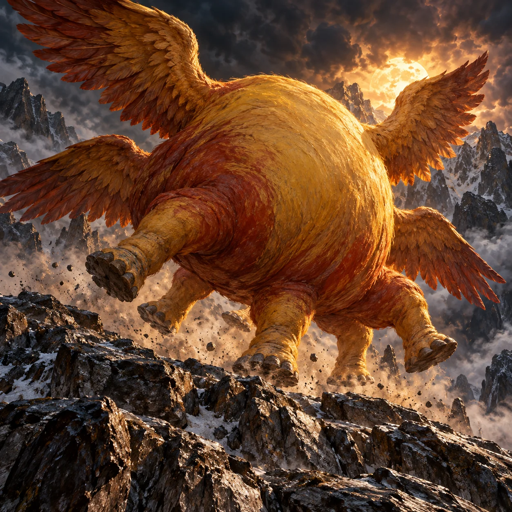
ONE YELLOW sack-like body tinged cinnabar red, NO HEAD/FACE/EYES/MOUTH/NOSE, EXACTLY SIX separate short feet and FOUR distinct wings, two high and two low. [hundun-c06,hundun-c09]
Aura: Distinctive anatomy hundun-c06,hundun-c09 and documented action hundun-c09.
Native and200px inspected: yellow cinnabar sack body, no face/head/eyes/mouth, exactly4wings high/low eachside and6feet:3large near,3smaller far beneath. Active bounding dance c09, Tianshan mountains. Natural contact dust only no chaosmagic. Uncanny imposing subject reads200px, no text/aura/gore. All seven Sangar checks pass.
Review sumberONE original square premium painterly cinematic Mitoloka illustration of Hundun, the faceless sack-like primordial being in Chinese tradition. ANATOMY: ONE YELLOW sack-like body tinged cinnabar red, NO HEAD/FACE/EYES/MOUTH/NOSE, EXACTLY SIX separate short feet and FOUR distinct wings, two high and two low. [hundun-c06,hundun-c09] MOMENT: Bound sideways over mountain crags in a powerful dance, six feet spread and four wings flared with clear gaps. POWER: No invented chaos destruction; only documented dancing, natural dust under feet. [hundun-c09] SCALE & CAMERA: extreme low close angle, subject fills80% of square; natural scale unless giant explicitly documented. Important features clear at200pixels. LIGHT & WEATHER: one dominant warm moonbreak/sunset or documented lantern, dramatic rim light, deep walnut shadows, natural moisture/dust. SURFACE: tactile natural skin/fur/scales/wood where appropriate, opaque coarse textiles, rough stone, original visible painterly brushwork. SETTING: Mount Tianshan with mineral-rich rocks; dark mountain storm. [hundun-c09] MOOD: dangerous for hostile beings, awe-inspiring and respectful for gods, guardians and living traditions, never cute/calm/decorative. HARD CONSTRAINTS: no text/lettering/logo/border/frame/watermark; no extra heads/limbs/fingers; no borrowed film/game/anime/comic design; no nudity or explicit gore; no generic glow aura, neon outlines, energy ribbons, floating runes.
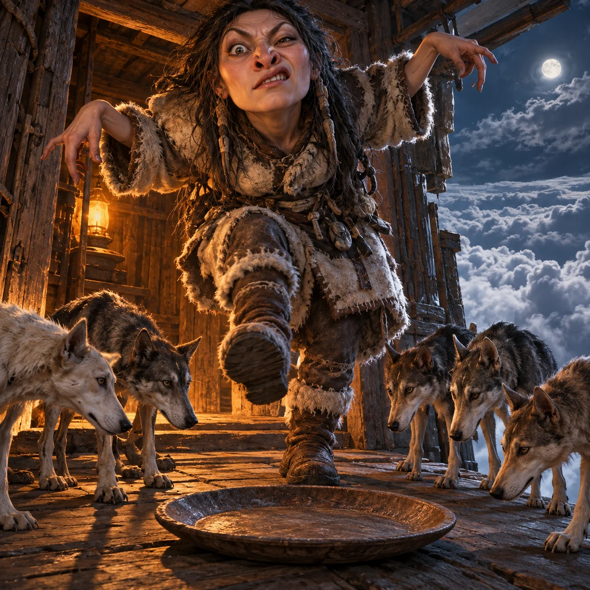
Uncanny female sky spirit baiting laughter through dancing grimaces
Aura: No generic aura. Presence comes from documented anatomy and action: idlirvirissong-c02, idlirvirissong-c04, idlirvirissong-c09, idlirvirissong-c11, idlirvirissong-c05, idlirvirissong-c06.
Native1254 and200px inspected. Strongly curled up nose with flared raised sides, asymmetrical wide/narrow eyes and crooked tense mouth create uncanny baiting grimace rather than cheerful grin. Jerky raised-knee dance: one head, two eyes, two arms/two legs, opaque hide garments. Five lean closed-mouth watchful dogs beside empty plate; sky cloudbanks explicitly below elevated sill at right. No gore, aura or text. Spirit and face dominate and remain unsettling at200. Seven Sangar checks pass; final independent appraisal belongs to Claude.
Review sumberONE original square premium painterly cinematic Mitoloka illustration of Idlirvirissong, hostile sky-house spirit who dances and makes grimaces to bait laughter. ANATOMY: ONE female supernatural spirit, one head, two eyes, two arms, two legs, completely opaque Arctic hide garments [idlirvirissong-c02,c04,c09]. HER DEFINING FEATURE is a strongly UPTURNED NOSE WITH BOTH SIDES TURNED UP: a broad tip curls upwards and each side curls upwards, making an unmistakable three-lobed sculptural silhouette. It is her own supernatural facial trait, no costume nose. Strong theatrical painterly stylization, NOT a photographic portrait or ethnic caricature. Asymmetrical uncanny GRIMACE: one eye wide, one narrowed, lips pulled sideways into a tense baiting grimace with ordinary teeth, NO cheerful smile, no modern clown paint or costume. MOMENT: Stomp one foot forward while lifting the other knee, both arms angled in jerky crooked dance, head thrust toward viewer, staring challengingly as if daring laughter [idlirvirissong-c05,c11]. Face and upturned nose large and clear at 200px. POWER: No supernatural glow; dangerous test of laughter expressed by confrontational dance only. No victims, entrails or injury [idlirvirissong-c06]. SCALE & CAMERA: Tight full-figure low-angle painterly composition, looming through framing not invented giant size. Face unusually close to viewer due to forward lean, fills upper third. LIGHT & WEATHER: A single low amber interior lamp illuminates face from below, deep walnut shadows, cold moon edge light at threshold. SURFACE: weathered opaque hide clothing with rough seams, rough timber, cloud vapor. SETTING: Her timber house FLOATS HIGH IN THE SKY; show exterior threshold and a broken-open side of the doorway with vast cloudbanks visibly BELOW THE FLOOR and around sill, no ground or trees [idlirvirissong-c05,c09]. Five lean hungry dogs with closed mouths, tucked bellies, angular shoulders, ears alert and eyes watchful crowd the lower side edges, focused on a large EMPTY PLATE beside her feet, qengmerping [idlirvirissong-c02,c05,c06]. No friendly smiling pets. Dogs and plate do not hide spirit legs. MOOD: Disturbing dangerous clown-like supernatural performance, baiting and hostile, not cheerful. Respectfully original stylized spirit, no realistic ethnic portrait. HARD CONSTRAINTS: no text, lettering, pseudoletters, logo, border, watermark, gore or nudity; no extra heads, limbs or digits; no copyrighted film/game/anime/comic design; no generic glowing aura, neon outlines, energy ribbons or floating runes.
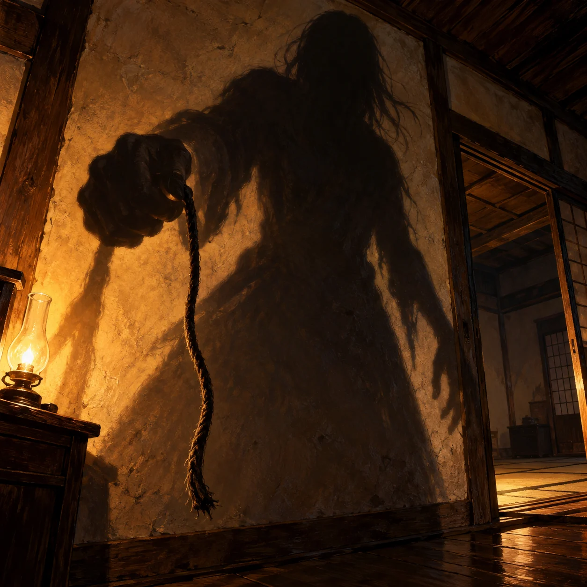
ONE large human-shaped SHADOW only, featureless silhouette with ONE head and TWO arms, one hand holding a plain loose CORD with NO LOOP/NOOSE; NO visible physical person casting this shadow. [iki-c05]
Aura: Distinctive anatomy iki-c05 and documented action iki-c05.
Native and200px inspected: looming featureless humanlike shadow on wall with one head/two arms, cord held in projected forward fist; no visible person casts it. Loose straight cord has no noose or loop and no victim/self-harm action. Empty lodging house c05, oil lamp establishes impossible shadow. Active threatening hand dominates200px, no aura/text/gore. All seven Sangar checks pass.
Review sumberONE original square premium painterly cinematic Mitoloka illustration of Iki, the possessing ghost witnessed as a shadow holding a cord. ANATOMY: ONE large human-shaped SHADOW only, featureless silhouette with ONE head and TWO arms, one hand holding a plain loose CORD with NO LOOP/NOOSE; NO visible physical person casting this shadow. [iki-c05] MOMENT: Reach the shadow hand across a plaster lodging-room wall toward viewer, loose cord dangling from its fist; ominous forward lean. POWER: Documented ghost shadow holding cord; no victim or self-harm action, no hanging body, no instructions or gore. [iki-c05] SCALE & CAMERA: extreme low close angle, subject fills80% of square; natural scale unless giant explicitly documented. Important features clear at200pixels. LIGHT & WEATHER: one dominant warm moonbreak/sunset or documented lantern, dramatic rim light, deep walnut shadows, natural moisture/dust. SURFACE: tactile natural skin/fur/scales/wood where appropriate, opaque coarse textiles, rough stone, original visible painterly brushwork. SETTING: Old lodging-house interior, empty adjoining room visible; single oil lamp casts the impossible shadow from no body. [iki-c05] MOOD: dangerous for hostile beings, awe-inspiring and respectful for gods, guardians and living traditions, never cute/calm/decorative. HARD CONSTRAINTS: no text/lettering/logo/border/frame/watermark; no extra heads/limbs/fingers; no borrowed film/game/anime/comic design; no nudity or explicit gore; no generic glow aura, neon outlines, energy ribbons, floating runes.
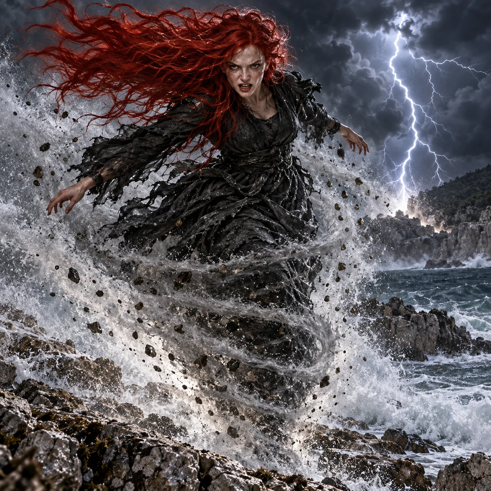
Fierce red-haired Irudica rides visibly inside a spinning coastal whirlwind; pursuing lightning strikes behind her.
Aura: Distinctive anatomy irudica-c04,irudica-c06 and documented action irudica-c01,irudica-c05,irudica-c07.
Native 1254 and 200px inspected: fierce red-haired spirit dominates, both arms visible, closed fully opaque dark gown hides legs; distinct continuous salt-spray and debris vortex narrows down to rocks around lower body c01; external sky lightning pursues from behind c05 and thunderstorm c07 over coast c10. No bare thigh, frightened expression, magic-casting, text, gore or aura. Seven Sangar checks pass. Claude rejection preserved in archive.
Review sumberONE original square premium painterly cinematic Mitoloka illustration of Irudica, the fierce red-haired spirit dwelling in a whirlwind in Croatian folklore. ANATOMY: ONE adult female spirit, one head, two eyes, two arms, two legs completely hidden under a CLOSED fully opaque ankle-length tattered black gown with opaque dark leggings beneath. Long vivid RED HAIR whipping horizontally. Fierce wild glare with bared ordinary teeth, no horns or wings. [irudica-c04,irudica-c06] MOMENT: SURGE toward the viewer as the leading edge of a thunderstorm, twist at the waist inside a powerful spinning whirlwind. She defiantly looks toward us, fierce and dangerous, never frightened or shielding her face. Arms angled to balance, no spellcasting gesture. POWER: A VERY VISIBLE dense funnel-shaped spinning column of saltwater spray, dust and flying pebbles circles her fully covered lower body, narrows toward the sea rocks below, and coils in broad continuous physical bands around her. The whirlwind is her dwelling [irudica-c01], she leads heavy thunderstorms [irudica-c07]. Behind and to one side, a branching thunderbolt descends FROM THE SKY chasing her, hitting a rock behind her. Lightning is God's pursuit of her, NEVER emitted from her hands/body. [irudica-c05] SCALE & CAMERA: close full figure, slightly low camera with NO upskirt view; face, red hair and recognizable funnel together fill most of frame, no invented giant size. LIGHT & WEATHER: single dominant distant lightning flash through black thunderclouds, deep walnut shadows and sharp rim light through spray. SURFACE: heavy wet opaque cloth, soaked red hair strands, rough limestone, white salt spray and dark suspended grit. SETTING: rocky Dalmatian Hvar coast under thunderclouds. [irudica-c05,irudica-c10] MOOD: violent and uncanny storm spirit actively advancing, visibly dangerous rather than ordinary woman in weather. HARD CONSTRAINTS: no bare thighs, knees or hips; no parted skirt or lifted hem; no aura, magic glow, text, lettering, logo, border, frame, watermark, extra limbs or fingers; no borrowed film/game/anime design; no nudity or gore.
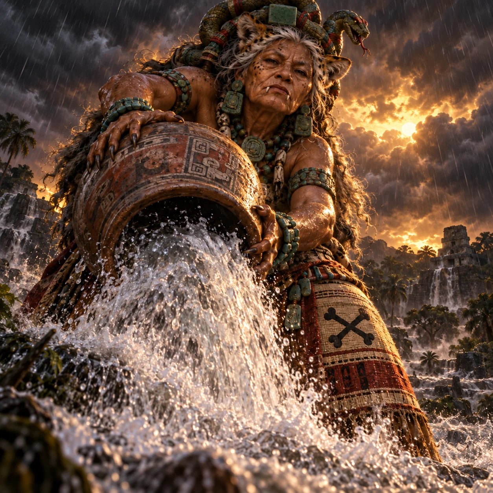
ONE aged woman head with JAGUAR EARS and subtle fangs, TWO arms ending clawed hands, two legs in fully opaque woven skirt bearing simple crossed-bone motif, ONE intertwined serpent headdress. [ixchel-c04,ixchel-c08,ixchel-c18]
Aura: Distinctive anatomy ixchel-c04,ixchel-c08,ixchel-c18 and documented action ixchel-c10.
Native and200px inspected after headdress edit: former top-centre snake-like carved fitting is now plain rectangular jade tablet with no eye/mouth/face. Exactly ONE live snake head at upperright remains with coiledbody c08. Aged jaguarears/fangs/clawedhands, inverted jar torrent c10 and opaque crossedbone skirt remain. No extra anatomy/aura/text/gore; all seven Sangar checks pass.
Review sumberEdit ONLY the TOP CENTRE fitting of Ixchel's headdress in this existing illustration. It currently resembles a second carved snake head with eyes/mouth, above her left jaguar ear near upper centre. Replace that fitting completely with a simple FLAT RECTANGULAR JADE TABLET: straight geometric edges, plain uncarved jade surface, NO eyes, NO mouth, NO nose, NO face, NO snout, NO animal features and no lettering. Preserve EXACTLY ONE living snake HEAD at UPPER RIGHT with tongue and eyes, and preserve the coiled serpent BODY around the headdress. Ensure there is no other serpent head anywhere, including carved or symbolic heads. Leave all other anatomy and composition intact: aged jaguar-eared/fanged woman, two clawed hands, opaque crossed-bone skirt, inverted water jar and enormous pouring torrent, storm landscape. Respectful awe-inspiring Maya goddess. Source ixchel-c08 entwined serpent headdress. No text, watermark, extra limbs, aura or gore. Square premium painterly cinematic image.
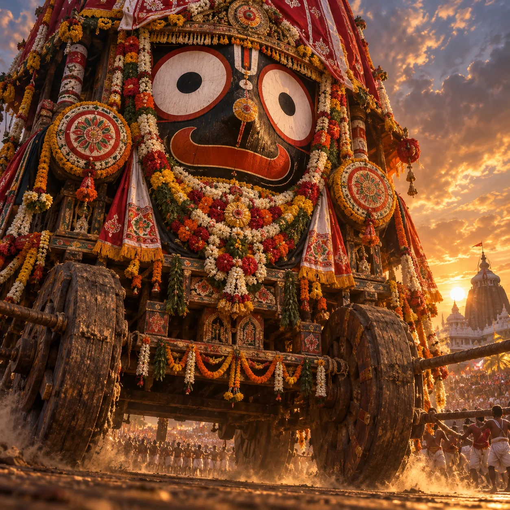
ONE decorated WOOD icon with enormous ROUND EYES, dark painted wooden face and broad stylized mouth, NO conspicuous human hands or legs; fully opaque ritual textiles and flower garlands. Do not turn icon into human anatomy. [jagannath-c03]
Aura: Distinctive anatomy jagannath-c03 and documented action jagannath-c06.
Native and200px inspected: decorated wooden icon with large round eyes, no conspicuous hands/legs c03. Great moving wooden car drawn by worshippers c06, wheel dust and pulling adults establish active annual procession. Respectful overwhelming sacred icon dominates, not reimagined human deity; no supernatural effects, text/gore or aura. All seven Sangar checks pass.
Review sumberONE original square premium painterly cinematic Mitoloka illustration of Jagannath, the revered wooden Hindu icon carried in an annual great car procession. ANATOMY: ONE decorated WOOD icon with enormous ROUND EYES, dark painted wooden face and broad stylized mouth, NO conspicuous human hands or legs; fully opaque ritual textiles and flower garlands. Do not turn icon into human anatomy. [jagannath-c03] MOMENT: Advance toward viewer borne on a huge wooden festival car being drawn by tiny distant adult worshippers, the sacred wooden face dominates square. POWER: No invented magic; overwhelming devotional procession movement, massive wooden wheels rolling dust, festival cloth moving in wind. [jagannath-c06] SCALE & CAMERA: extreme low close angle, subject fills80% of square; natural scale unless giant explicitly documented. Important features clear at200pixels. LIGHT & WEATHER: one dominant warm moonbreak/sunset or documented lantern, dramatic rim light, deep walnut shadows, natural moisture/dust. SURFACE: tactile natural skin/fur/scales/wood where appropriate, opaque coarse textiles, rough stone, original visible painterly brushwork. SETTING: Annual great car procession, low view directly before chariot; original respectful traditional icon design. [jagannath-c06] MOOD: dangerous for hostile beings, awe-inspiring and respectful for gods, guardians and living traditions, never cute/calm/decorative. HARD CONSTRAINTS: no text/lettering/logo/border/frame/watermark; no extra heads/limbs/fingers; no borrowed film/game/anime/comic design; no nudity or explicit gore; no generic glow aura, neon outlines, energy ribbons, floating runes.
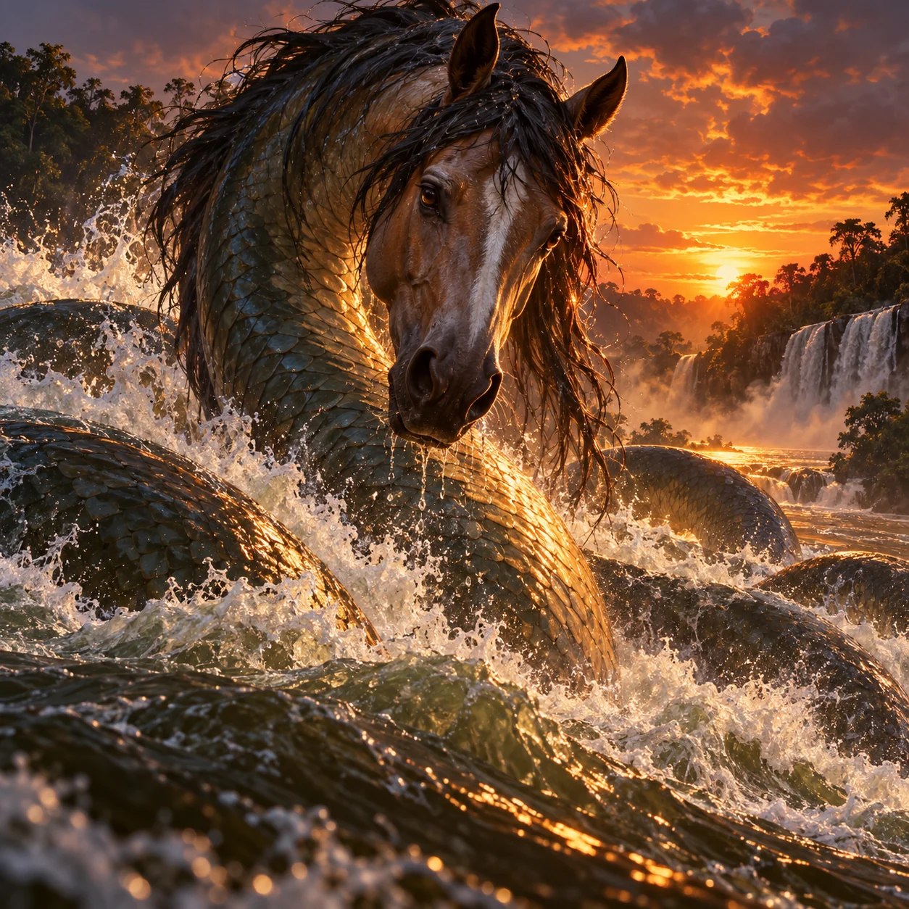
ONE enormous continuous SERPENT body with ONE HORSE HEAD, two horse ears, two eyes, flowing wet horse mane, NO legs, NO arms, NO wings or horns; scales below horse neck. [jichi-c02,jichi-c08]
Aura: Distinctive anatomy jichi-c02,jichi-c08 and documented action jichi-c02,jichi-c03.
Native and200px inspected: one horse head with2ears/2eyes/mane on enormous continuous scaled serpent body, no limbs/wings/horns. Rising river coils physically displace water c02/c08, sunset only c03 with Bolivia forestwaterfall. Majestic guardian fills frame and reads at200px, no aura/text/gore. All seven Sangar checks pass.
Review sumberONE original square premium painterly cinematic Mitoloka illustration of Jichi, the Bolivian guardian serpent of waters. ANATOMY: ONE enormous continuous SERPENT body with ONE HORSE HEAD, two horse ears, two eyes, flowing wet horse mane, NO legs, NO arms, NO wings or horns; scales below horse neck. [jichi-c02,jichi-c08] MOMENT: Rise from river at sunset, horse head bends toward viewer, huge serpent coils lift sheets of ordinary displaced water. POWER: Guardian emerging from water, no invented water-control beams; massive body physically displaces river into waves. [jichi-c02,jichi-c03] SCALE & CAMERA: extreme low close angle, subject fills80% of square; natural scale unless giant explicitly documented. Important features clear at200pixels. LIGHT & WEATHER: one dominant warm moonbreak/sunset or documented lantern, dramatic rim light, deep walnut shadows, natural moisture/dust. SURFACE: tactile natural skin/fur/scales/wood where appropriate, opaque coarse textiles, rough stone, original visible painterly brushwork. SETTING: Lowland Bolivia river with forest and waterfall at sunset only. [jichi-c01,jichi-c02,jichi-c03] MOOD: dangerous for hostile beings, awe-inspiring and respectful for gods, guardians and living traditions, never cute/calm/decorative. HARD CONSTRAINTS: no text/lettering/logo/border/frame/watermark; no extra heads/limbs/fingers; no borrowed film/game/anime/comic design; no nudity or explicit gore; no generic glow aura, neon outlines, energy ribbons, floating runes.
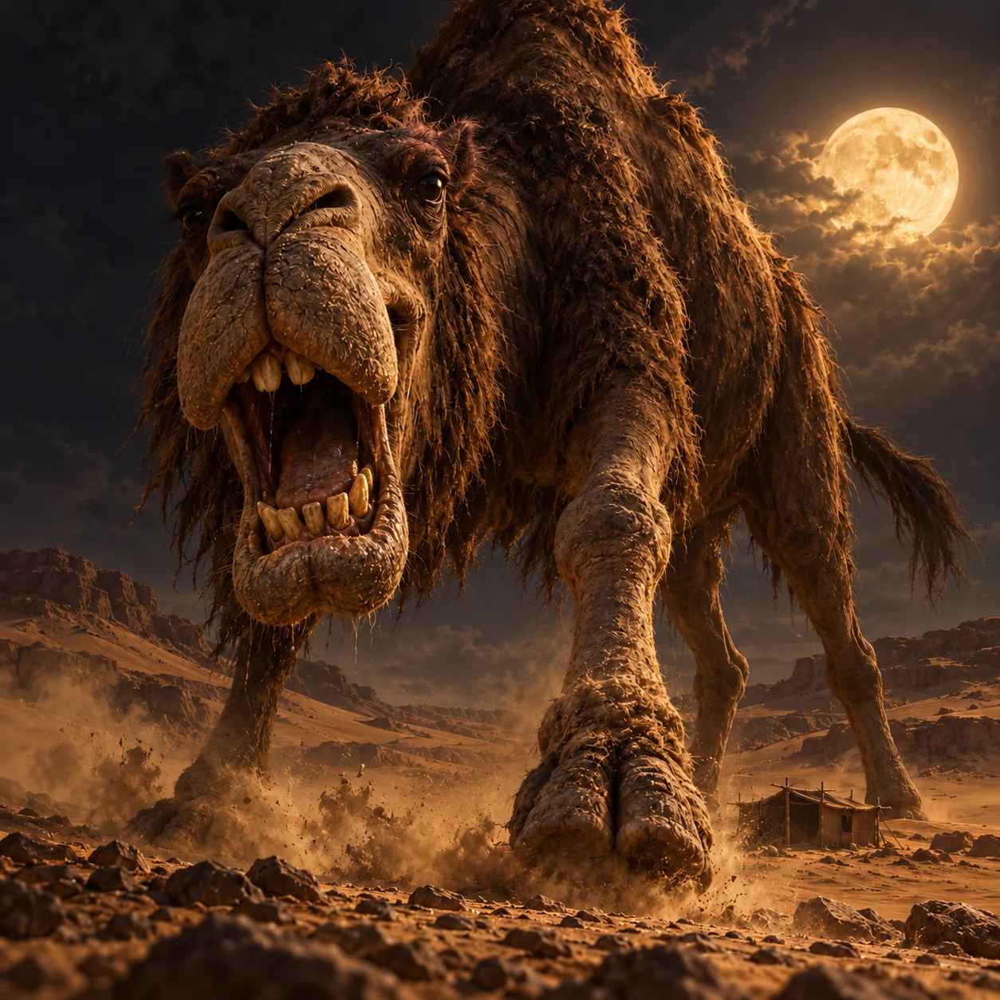
Giant camel-like Tuareg night bogeyman looming over desert rocks.
Aura: Giant camel-like body c02/c08 and nocturnal approach c07 create danger without aura.
Native and 200px inspected after extra-leg correction: exactly four legs (far left, massive foreground, inner rear, far right) and four split padded feet; one head/two eyes/one hump/one tail. Mouth bellow and lifted dust, enormous body compared with tiny empty tent make mythic giant clear at 200px. No victims, dinosaur anatomy, extra limbs, text or glow. All seven Sangar checks pass; rejected01 archived exact provenance.
Review sumberEDIT this Jobar giant camel-like monster illustration. Preserve head, expression, giant hump, fur, moon, desert, tiny tent, large foreground right forefoot and all lighting. Correct ONLY anatomy so EXACTLY FOUR legs and FOUR feet exist. REMOVE the narrow EXTRA CENTRAL-LEFT LEG hanging immediately under the chest at about 45 percent image width (between far-left leg and massive foreground leg). Replace its entire silhouette with unobstructed dark background and desert. KEEP four remaining legs: far-left foreleg at 22 percent width, massive foreground foreleg at 63 percent, rear inner leg at 75 percent and far-right rear leg at 87 percent. Each kept leg anatomically joins torso; each has one padded split camel foot. Do not add new limbs, do not change size or head or tent. One head, two eyes, one hump, four legs, one tail. No text, glow, violence, injury or gore. The creature remains an original giant camel-like beast of Tuareg lore [jobar-monster-c02,jobar-monster-c08].
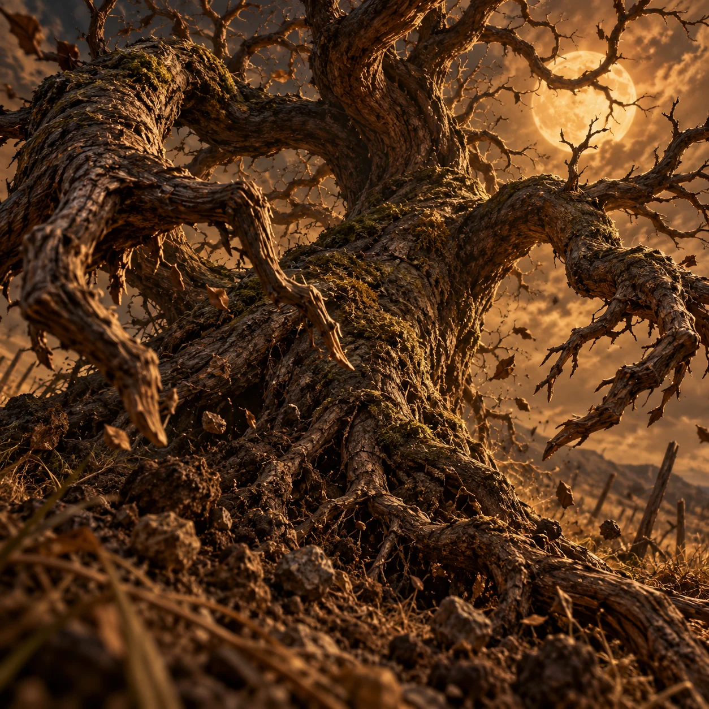
An original menacing tree yōkai bending seizing branches toward viewer on abandoned battlefield.
Aura: Physical seizing branch action c03 makes tree c01 the active creature; no aura or anthropomorphic face.
Native and 200px inspected: one original tree yokai with forcefully curved grasping branches converging on viewer, bent trunk and uplifted soil/roots, no human face/limbs invented. Subject dominates tight low angle and remains threatening at 200px, not a landscape. Bare abandoned battlefield markers secondary. No copied character, victims, gore, text or aura. All seven Sangar checks pass.
Review sumberONE original square premium painterly cinematic Mitoloka illustration of Jubokko, the tree-like yokai of modern Japanese stories haunting former battlefields. Entirely original design, do not copy any manga or anime tree character. ANATOMY: ONE huge living GNARLED TREE with thick rooted trunk and many crooked BRANCHES, rough black-brown bark; NO human face, eyes, mouth, hands, legs or anthropomorphic body invented. Branch tips remain wooden branching twigs, not fingers [jubokko-c01,jubokko-c03]. MOMENT: Bend the whole trunk down toward viewer while THREE main crooked branches reach forcefully in from above and both sides, curling around the near foreground as if about to seize; roots tear soil and small stones upward through PHYSICAL motion. No person or victim in scene. POWER: branches physically seize approaching people in story; depict imminent grasping action without contact, blood, wounds, dead bodies or feeding. No magic rays or aura [jubokko-c03]. SCALE & CAMERA: extreme low near-root close angle; knotty trunk and grasping wooden branches dominate square, viewer trapped in their converging shapes; not a distant landscape. LIGHT & WEATHER: one amber moon shaft catches bark edges and dust, deep warm walnut shadows; ordinary windblown dead leaves and soil. SURFACE: coarse split ancient bark, moss, splintered twig tips, disturbed soil. SETTING: abandoned former Japanese battlefield, a few blank broken spear shafts half-buried under old grass as secondary editorial cue, no symbols [jubokko-c02]. MOOD: active overwhelming danger from a moving predatory tree, never ordinary static tree, calm landscape or cute face-tree. HARD CONSTRAINTS: no text, lettering, inscriptions, logo, border, frame or watermark; no extra heads, limbs or fingers; no design borrowed from any film, game, anime or comic; no nudity or explicit gore; no generic glow aura, neon outline or energy ribbons. Premium painterly brushwork, dark warm walnut and antique gold palette, square composition.
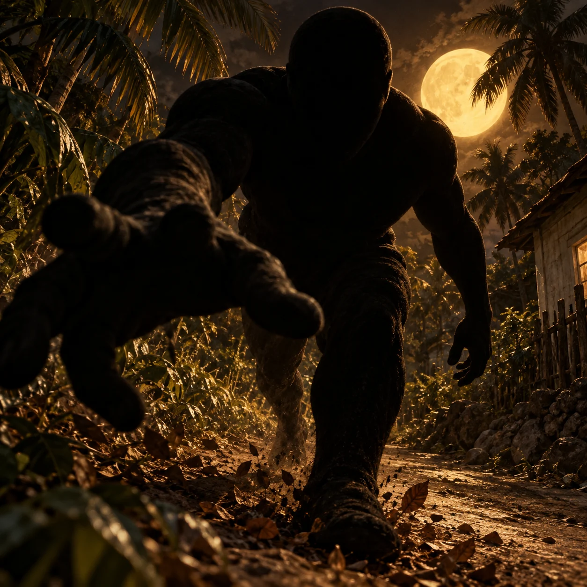
Dense dark shadow figure advancing on Caribbean path, not a mist ghost.
Aura: Dense shadow figure c04 and forceful close approach create supernatural dread without glowing eyes or aura.
Native and 200px inspected: one dense shadow figure with unreadable featureless face, two arms/two legs, advancing and reaching directly toward viewer. Body is opaque shadow rather than mist, fingers naturally shaped no claws, no face invented. Dominant looming action remains dangerous at 200px. No glow, text, ritual or victim. All seven Sangar checks pass.
Review sumberONE original square premium painterly cinematic Mitoloka illustration of a Jumbee, the dark shadowy spirit figure of Caribbean folklore. ANATOMY: ONE dense DARK SHADOWY FIGURE, clearly solid black silhouette rather than wispy smoke, with ONE head, TWO shoulders/arms and TWO legs. Entire body opaque near-black, face completely unreadable, NO eyes, mouth, horns, claws, skeletal parts or invented clothing details [jumbee-c04]. MOMENT: Advance forcefully down a narrow path directly toward viewer, lean head and shoulders forward, one broad featureless hand reaches toward lens while the other arm hangs bent behind; one leg steps forward with leaves disturbed beneath foot. Strong confrontational looming action. POWER: no visible power used; supernatural identity comes from unnaturally dense shadow figure that swallows reflected light, not magic glow or fog [jumbee-c04]. SCALE & CAMERA: extreme low close angle; black head/shoulders and reaching hand fill nearly entire square; normal human-like proportions through close framing, no invented giant size. LIGHT & WEATHER: one dominant warm moon behind side of figure, hard natural rim on surrounding leaves but no glowing outline on creature, deep walnut background, ordinary ground dust. SURFACE: optically dense featureless shadow body, damp rough path, palm foliage secondary. SETTING: Caribbean night path, simple palms and rough house corner in distance, no specific island asserted [jumbee-c01]. MOOD: intense uncanny shadow presence, dangerous and imposing, never ordinary person, ghost costume, wispy fog or cute spirit. HARD CONSTRAINTS: no text, lettering, inscriptions, logo, border, frame or watermark; no extra heads, limbs or fingers; no design borrowed from any film, game, anime or comic; no nudity or explicit gore; no generic glow aura, neon outline or energy ribbons. Premium painterly brushwork, dark warm walnut and antique gold palette, square composition.
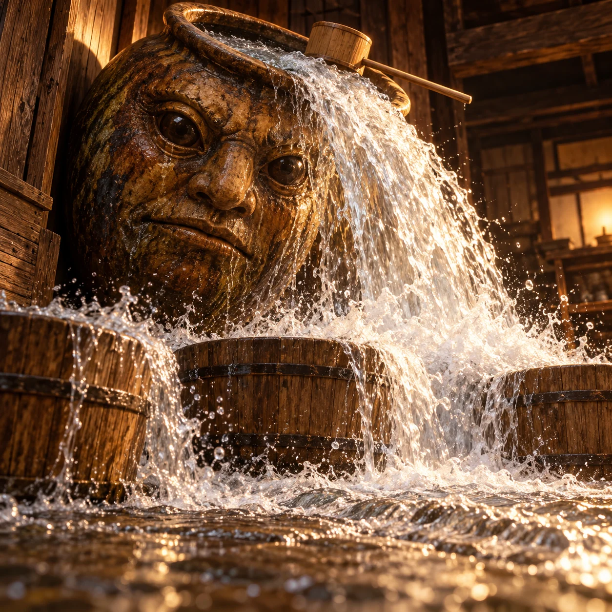
A benevolent faced water jar pouring an inexhaustible torrent into household basins.
Aura: Impossible inexhaustible water c03/c07 and strong faced vessel c02 evoke benevolent awe without generic aura.
Native and 200px inspected: living faced ceramic water jar with exactly two eyes/nose/mouth, no limbs invented. Jar remains full while large torrent spills from top into three brimming basins; ladle at rim. Physical abundance is active and imposing at thumbnail; solemn benevolent face no evil traits. No text, cute mascot, extra anatomy or aura. Seven Sangar checks pass.
Review sumberONE original square premium painterly cinematic Mitoloka illustration of Kameosa, the auspicious Japanese water-jar yokai with inexhaustible water. ANATOMY: ONE ancient broad earthenware WATER JAR with TWO large solemn dark EYES, ONE broad NOSE and ONE strong closed MOUTH formed naturally in worn ceramic; no head separate from vessel, NO arms, legs, teeth or horns. Face carved-looking but alive, stern wise benevolent expression [kameosa-c02]. MOMENT: The great old jar leans against a timber wall, tilting its rim forward so a huge continuous TORRENT OF CLEAR WATER crashes into three already overflowing plain wooden basins and across the foreground floor. Its eyes stare intently down toward viewer; mouth remains below rim and water comes from TOP OPENING. One plain ladle rests visibly across rim. POWER: water never runs out however much is ladled, impossible continuous abundance, jar remains visibly brim-full despite torrent; no levitation, water serpents, magical glow or beams [kameosa-c03,kameosa-c07]. SCALE & CAMERA: extreme low near-floor close angle; expressive ceramic jar and towering sheet of physical water dominate square, ordinary household jar size relative to basins, not invented giant. LIGHT & WEATHER: one warm off-frame hearth source sharply rims wet pottery and translucent water, deep walnut interior shadows, physical spray and droplets. SURFACE: cracked rough dark ochre ceramic, mineral stains, wet carved facial ridges, worn basins and splintered timber. SETTING: editorial old Japanese household water corner; no specific site asserted. MOOD: imposing benevolent uncanny bounty and wonder [kameosa-c13], never evil, cute smiling mascot, static jar or calm still life. HARD CONSTRAINTS: no text, lettering, inscriptions, logo, border, frame or watermark; no extra heads, limbs or fingers; no design borrowed from any film, game, anime or comic; no nudity or explicit gore; no generic glow aura, neon outline or energy ribbons. Premium painterly brushwork, dark warm walnut and antique gold palette, square composition.
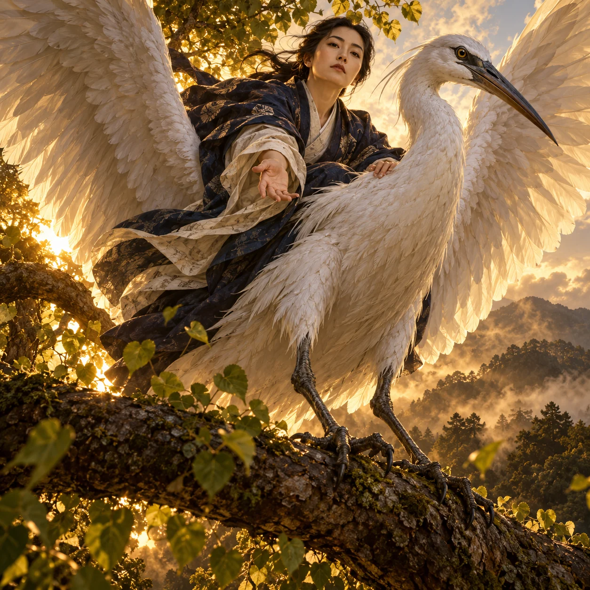
Female smithing deity arriving on a white heron and alighting on a katsura tree.
Aura: White-heron divine arrival c03/c07 fills frame in reverent action; no unsupported forge magic or aura.
Native and 200px inspected: one dignified female deity in opaque robes riding one white heron, one hand extended and one steadying bird. Two arms, bird two wings/two legs with separate branch-grasping feet. Landing feathers/leaves and robe movement show arrival; low close sacred vehicle scene remains awe-inspiring at 200px, no ordinary woman portrait. No invented aura/crown/weapons/text. Seven Sangar checks pass.
Review sumberONE original square premium painterly cinematic Mitoloka illustration of Kanayago Kami, the revered Japanese smithing goddess arriving in Izumo on a white heron. ANATOMY: ONE adult FEMALE deity with ONE head, TWO natural eyes, TWO arms and TWO legs fully covered by opaque layered dark indigo and antique-ivory Japanese ROBES. Plain tied dark hair, no crown or invented weapon. She rides ONE large WHITE HERON with ONE long beaked head, TWO eyes, TWO feathered wings, TWO long bird legs and one short tail [kanayago-kami-c01,kanayago-kami-c03]. MOMENT: Descend toward viewer on the heron as it lands on a thick katsura tree bough, wings driving upward and talons grasping bark; goddess leans forward with one hand steady on bird's shoulder and other hand open in a solemn downward greeting. Her face commanding and clearly visible above white bird neck. POWER: documented arrival riding a white heron and alighting on katsura, physically whipping robes and tree leaves; no invented metal magic, flames, beams or aura [kanayago-kami-c07]. SCALE & CAMERA: extreme low close angle from beneath branch; goddess face/upper body and heron's huge white wing sweep dominate square; no ordinary distant rider scene. LIGHT & WEATHER: one golden dawn shaft behind tree rims feathers, robe folds and dignified face, deep walnut mountain shadows, ordinary leaf spray. SURFACE: layered damp white feathers, coarse opaque robe folds, rough katsura bark, small green heart-shaped leaves. SETTING: mountain katsura tree in Izumo, Japanese wooded slopes secondary [kanayago-kami-c03,kanayago-kami-c07]. MOOD: reverential awe at active sacred arrival, dignified divine authority, never monster, cute, ordinary woman or decorative portrait. HARD CONSTRAINTS: no text, lettering, inscriptions, logo, border, frame or watermark; no extra heads, limbs or fingers; no design borrowed from any film, game, anime or comic; no nudity or explicit gore; no generic glow aura, neon outline or energy ribbons. Premium painterly brushwork, dark warm walnut and antique gold palette, square composition.
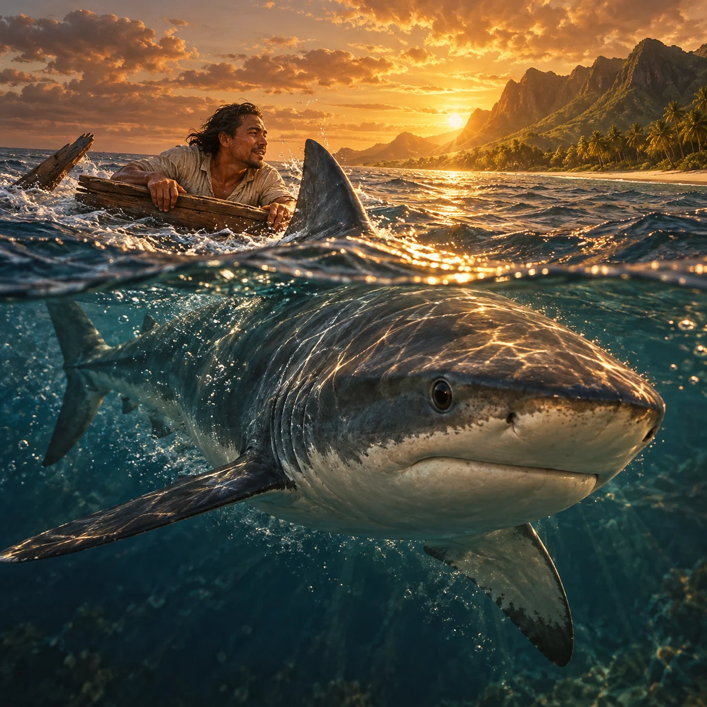
Kindly shark ancestor returning an adult survivor of a canoe wreck safely toward island shore.
Aura: Documented safe rescue c03/c06/c11 distinguishes sacred shark from ordinary predator without glowing eyes or aura.
Native and 200px inspected: one natural shark with closed mouth, correct paired pectoral fins/dorsal/tail, no fantasy markings. Shark dominates split-water view while safe adult holding canoe float follows beside dorsal fin, looking toward nearby island shore; broken wood secondary. Strong forward rescue movement and protector relation readable at 200px, no attack. No glow, teeth display, text, gore or invented anatomy. Seven Sangar checks pass.
Review sumberONE original square premium painterly cinematic Mitoloka illustration of Kāneikokala, the kindly Hawaiian shark ancestor returning a canoe-wreck survivor safely to shore. ANATOMY: ONE powerful natural GREY SHARK, one head, TWO dark natural eyes, normal shark mouth CLOSED, one dorsal fin, TWO pectoral fins, paired pelvic fins and one vertical tail; no horns, tattoos, human face, glowing eyes or invented anatomy [kaneikokala-c05,kaneikokala-c11]. MOMENT: Swim strongly toward a visible Hawaiian island shore, huge foreground shark viewed from a split waterline low angle, head angled toward viewer but travel direction diagonal shoreward. ONE fully clothed ADULT survivor beside dorsal fin holds a small plain wooden canoe float, safe, alert and relieved, gently carried in the shark's wake. No touching mouth, no teeth, biting, fear, injury or violence. A broken canoe plank behind explains rescue without wrecked bodies. POWER: a kindly protector saves canoe-wreck survivors and returns them to home islands; active calm guidance through moving water, no magical energy [kaneikokala-c03,kaneikokala-c06,kaneikokala-c11]. SCALE & CAMERA: low split waterline close view makes shark's face and forward body dominate square, adult and island are secondary, natural shark scale through perspective, not giant monster. LIGHT & WEATHER: one golden sunset lights shark under surface and wet adult above, deep walnut sea shadows, ordinary rolling swell and translucent spray. SURFACE: natural matte grey shark skin, water droplets, worn floating wood, fully opaque wet simple clothing. SETTING: ocean approaching Hawaiian home island, green shore clearly ahead [kaneikokala-c06]. MOOD: reverent awe and gratitude for a powerful kindly ancestral guardian, active rescue, never threatening predator, cute pet or ordinary shark portrait. HARD CONSTRAINTS: no text, lettering, inscriptions, logo, border, frame or watermark; no extra heads, limbs or fingers; no design borrowed from any film, game, anime or comic; no nudity or explicit gore; no generic glow aura, neon outline or energy ribbons. Premium painterly brushwork, dark warm walnut and antique gold palette, square composition.
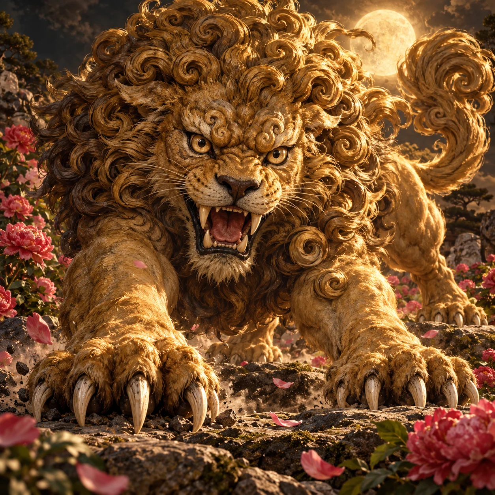
Living sacred lion with curled mane, prominent eyes, strong legs and exaggerated claws/fangs guarding peonies.
Aura: Distinct curled mane/prominent eyes/strong limbs and fangs c02 in active guardian movement c04 give reverent awe.
Native and 200px inspected: one living sacred lion, dense curled mane/prominent eyes/strong legs/large claws and fangs; exactly four paws visible (two front, one central rear under belly, one back right), one flowing curled tail. Active landing with dust/peony petals, natural fur not stone. Reverent imposing guardian at 200px, no horns/balls/cubs/text/aura. Seven Sangar checks pass.
Review sumberONE original square premium painterly cinematic Mitoloka illustration of Karajishi, a living sacred lion of Japanese guardian imagery, never a statue or screen painting. ANATOMY: ONE LIVING powerful LION with exaggerated tightly CURLED MANE, TWO large PROMINENT EYES, FOUR thick muscular LEGS and FOUR enormous clawed PAWS, ONE curled flowing TAIL, ONE head with two long FANGS visible in open protective warning roar [karajishi-c01,karajishi-c02]. Mane is real living coarse fur curling into dense spirals, not stone carvings. No horn, wings, extra tails, ball or cub. MOMENT: Bound down from a low rock directly toward viewer, front paws spread apart with immense claws extended in a forceful protective landing, back two paws clearly staggered behind, head lowered and large eyes intent; curled mane flies with movement. POWER: no visible magic documented; sacred guardian authority through anatomy, protective stance and movement [karajishi-c04]. SCALE & CAMERA: extreme low close angle; lion's head, curled mane, fangs and four strong legs fill square, no invented giant scale. LIGHT & WEATHER: one warm moon shaft rims antique gold fur and spiral mane, deep walnut shadows, ordinary displaced dust and peony petals. SURFACE: coarse golden curled fur, dark nose, ivory fangs and oversized claws, rough rock and living peony leaves. SETTING: editorial stone garden filled with living PEONIES, referencing common peony motif and Buddhist guardian context, no temple text or symbolic inscriptions [karajishi-c03,karajishi-c04]. MOOD: reverential awe and formidable guardian power, active and imposing, never evil, cute mascot, ordinary lion, statue or decorative portrait. HARD CONSTRAINTS: no text, lettering, inscriptions, logo, border, frame or watermark; no extra heads, limbs or fingers; no design borrowed from any film, game, anime or comic; no nudity or explicit gore; no generic glow aura, neon outline or energy ribbons. Premium painterly brushwork, dark warm walnut and antique gold palette, square composition.
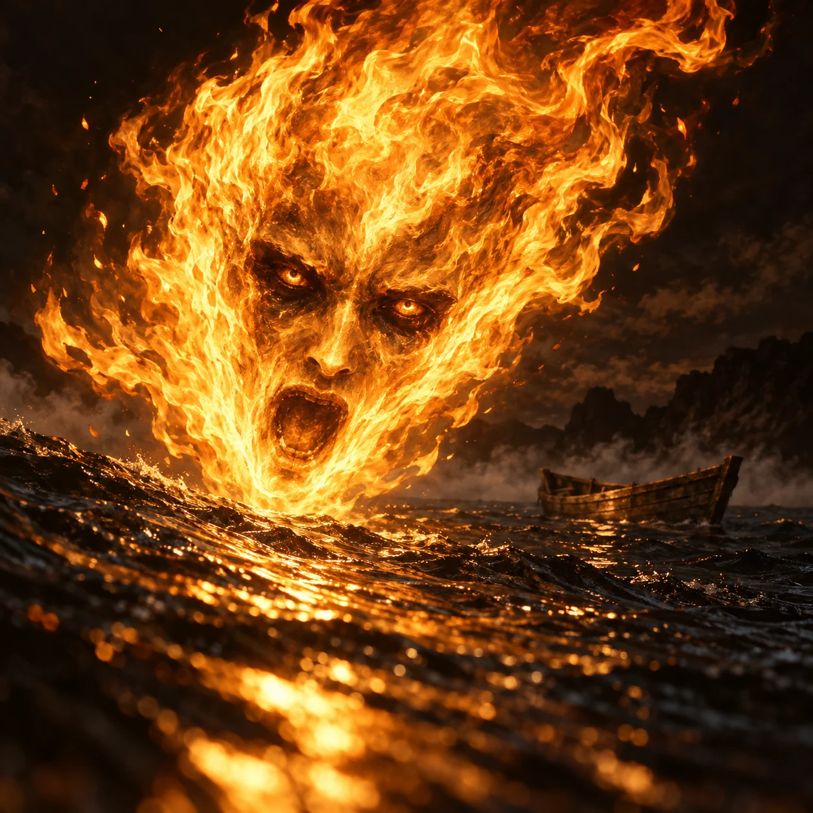
A human face floating within a ghost-light flame above water in Kōchi.
Aura: Flame is the documented spirit form c02/c03 rather than generic aura; face within flame dominates.
Native and 200px inspected: one human face within a single moving flame manifestation above water; no solid severed head, torso or limbs. Actual flame is documented body not aura, reflections physically light water and empty boat. Flame tongues stream backward while face confronts viewer, unmistakably active uncanny spirit at 200px. No gore, victims, text or copied screen design. Seven Sangar checks pass.
Review sumberONE original square premium painterly cinematic Mitoloka illustration of Kechibi, the Kōchi ghost light whose flames contain a human face. ANATOMY: ONE compact floating GHOST-LIGHT FLAME containing ONE clearly readable ADULT HUMAN FACE with TWO eyes, ONE nose and ONE mouth, face formed within the fire rather than a solid severed head. No torso, limbs, horns, skull or extra faces. The entire being IS flame, not a person wrapped in generic aura [kechibi-c01,kechibi-c02,kechibi-c03]. MOMENT: Surge toward the low viewer across the water, flame tongues streaming backward and upward, human face inside opens mouth in a grave wordless call, eyes fixed down toward viewer. Flame front bends into forward-moving shape; not a static candle. POWER: human spirit transformed into actual fire, one human face floats within flames; only natural flame light reflects across rippling water, no energy ribbons, magic circles or beams [kechibi-c02,kechibi-c03]. SCALE & CAMERA: extreme water-level close angle; fiery face and flame dominate square, small empty skiff far behind sets ordinary ghost-light scale without a giant person. LIGHT & WEATHER: flame itself is ONE dominant amber light source, dark walnut night sky and water, warm hard reflections, ordinary sea mist low beyond the flame. SURFACE: turbulent translucent orange-gold flame with soot-dark face hollows, textured wet water, rough boat wood secondary. SETTING: above dark Kōchi coastal water linked with ship-ghost accounts [kechibi-c04]. MOOD: uncanny and imposing active ghost-light encounter, never cute, decorative lantern, calm flame or suffering burning person. No victims or injury. HARD CONSTRAINTS: no text, lettering, inscriptions, logo, border, frame or watermark; no extra heads, limbs or fingers; no design borrowed from any film, game, anime or comic; no nudity or explicit gore; no generic glow aura, neon outline or energy ribbons. Premium painterly brushwork, dark warm walnut and antique gold palette, square composition.
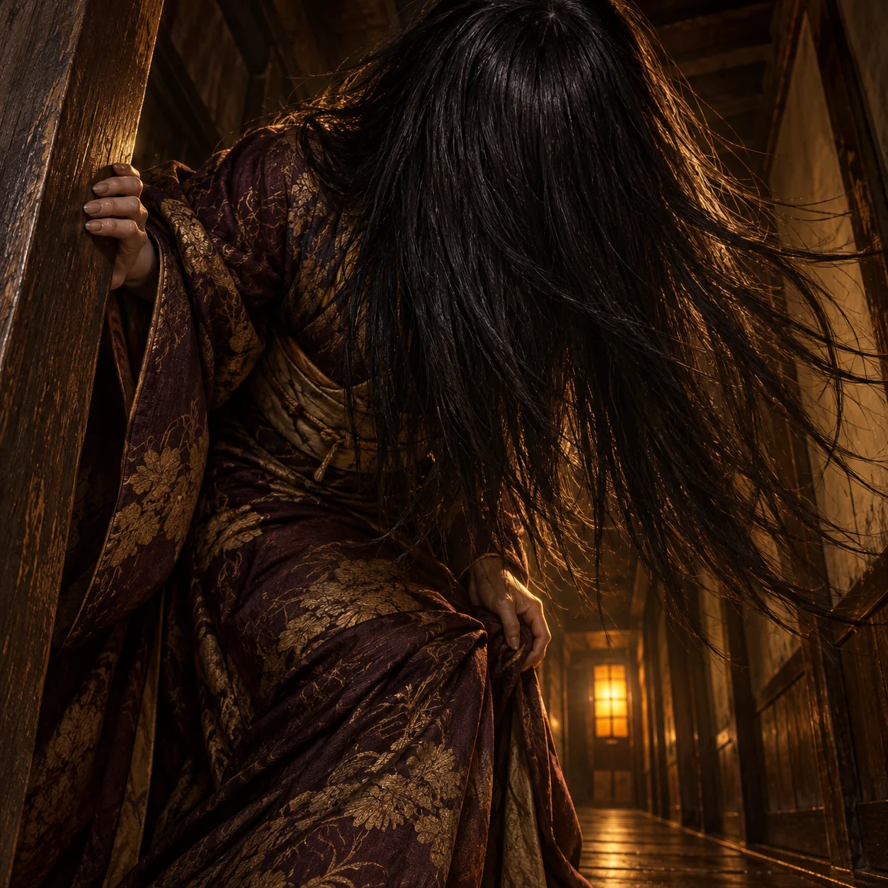
Courtesan-like yokai with entire face obscured by an overwhelming curtain of hair; features not asserted.
Aura: Impenetrable hair curtain c02/c06 and sudden close turn create dread without inventing face or power.
Native and 200px inspected: one fully clothed courtesan-like figure with face entirely hidden by thick black hair; no facial feature or blank-skin face invented. Two hands, one gripping doorpost/other hem, bent forward turning pose with flying hair conveys sudden close encounter. Intense hidden-face presence at 200px, no ordinary glamour portrait. No supernatural hair tentacles, text, glow, nudity or gore. Seven Sangar checks pass.
Review sumberONE original square premium painterly cinematic Mitoloka illustration of Kejōrō, the Japanese courtesan-like yokai whose face is hidden by hair. ANATOMY: ONE adult woman-like figure, one head completely engulfed by an enormous thick curtain of long rough BLACK HAIR, every part of face totally obscured: NO eyes, mouth, nose or blank skin visible. Do not reveal whether a face exists. TWO arms and TWO legs beneath fully opaque layered dark plum and antique-gold Edo-style robe, plain tied obi, high closed collar, no cleavage [kejoro-c02,kejoro-c06]. MOMENT: Turn sharply around a dark corridor corner and bend toward viewer as though suddenly encountering them; one hand grips timber doorpost, the other pulls robe hem clear of step. Hair swings forward into lens, outer strands lifted by ordinary corridor draft, whole hidden-face head fills upper foreground. Not calmly standing. POWER: no documented visible power; menace comes only from impenetrable hair and confrontational movement, no floating hair tentacles, spell or aura. SCALE & CAMERA: extreme low close angle, hair-shrouded head and hunched shoulder dominate square, normal human size through tight framing; no invented giant scale. LIGHT & WEATHER: one low amber lantern OFF FRAME rakes shiny coarse hair and layered cloth, deep walnut shadows, slight ordinary indoor dust. SURFACE: tangled coarse black hair, worn opaque silk robe, old wood doorpost and floor. SETTING: editorial narrow Edo-style interior passage, no specific location asserted. MOOD: profoundly uncanny sudden close encounter, never ordinary relaxed woman, cute, erotic, glamour portrait or decorative pose. Features remain completely hidden. HARD CONSTRAINTS: no text, lettering, inscriptions, logo, border, frame or watermark; no extra heads, limbs or fingers; no design borrowed from any film, game, anime or comic; no nudity or explicit gore; no generic glow aura, neon outline or energy ribbons. Premium painterly brushwork, dark warm walnut and antique gold palette, square composition.
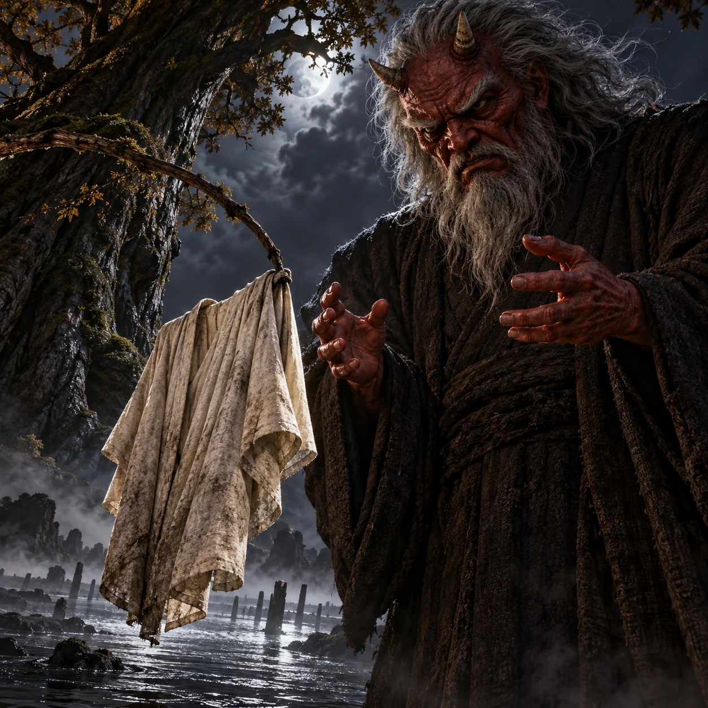
Stern red-skinned oni elder releasing an empty robe whose sin-weight bends a thin Eryoju branch deeply down beside Sanzu River.
Aura: Riverside judgement of sin by physically bending branch c05/c08 and severe oni elder c01 create sacred awe without aura.
Native1254 and200 inspected: red weathered oni elder with two small horns as recorded interpretation c01/c08, severe judging glare, wild grey hair, closed opaque robe. One head/two eyes/two arms; five fingers each open withdrawing hand, visibly separated from thin branch and empty robe. Eryoju branch bends deeply down under hanging robe alone c03/c05/c08; Sanzu river behind. Oni form and sin-weight action clear at200, no startled ordinary man, victims/torture/text/aura/gore. Seven Sangar checks pass; previous rejected history preserved.
Review sumberONE original square premium painterly cinematic Mitoloka illustration of Keneo, the old ONI who judges the weight of sin by hanging souls clothing at the Sanzu River. ANATOMY: ONE clearly demonic ONI-FORMED elderly man, ONE head, TWO eyes, TWO arms, TWO legs, glaring deep-set eyes, massive furrowed brow, coarse weathered DARK RED oni skin, bared ordinary teeth, wild long grey hair and beard, TWO SMALL blunt oni horns. He wears a CLOSED fully opaque coarse black-brown robe from neck to ankles. [keneo-c01,keneo-c02,keneo-c08] MOMENT: Glare down toward viewer in severe judgement as he WITHDRAWS BOTH empty open five-fingered hands away from an EMPTY pale robe he has just hung. Brow lowered, mouth a stern snarl, never startled or pleading. POWER: A thin living branch of the HUGE Eryoju tree begins high at left, stretches horizontally then BENDS IN A DEEP DOWNWARD CURVE solely from the impossible weight of ONE empty pale robe hanging freely at the tip. A CLEAR visible gap separates his hands from the branch and robe; NO HANDS pull, support or touch either. The branch is thin enough that deep sag visibly communicates weight of sin, while the trunk is massive. [keneo-c03,keneo-c05,keneo-c08] SCALE & CAMERA: low close view, oni elder face fills upper right third, down-curved branch and empty robe occupy left third, hands between with clear gaps; great trunk and dark river behind. No invented giant size for Keneo. LIGHT & WEATHER: one cold moon behind cloud; stark rim light on coarse red face and robe, deep walnut shadows, ordinary river mist. SURFACE: coarse red aged skin, tangled grey hair, worn opaque cloth, deeply furrowed bark and strained thin living wood. SETTING: great Eryoju beside Sanzu River in the folk Buddhist underworld. [keneo-c01,keneo-c08] MOOD: sacred awe and stern terrifying judgement, unmistakable oni elder rather than ordinary old man hanging laundry. HARD CONSTRAINTS: no people inside weighed robe, no victims/torture/skin removal, no nudity or gore; no generic aura, neon or energy ribbons; no text, logo, border or watermark; no extra limbs/fingers; no borrowed film/game/anime/comic design.
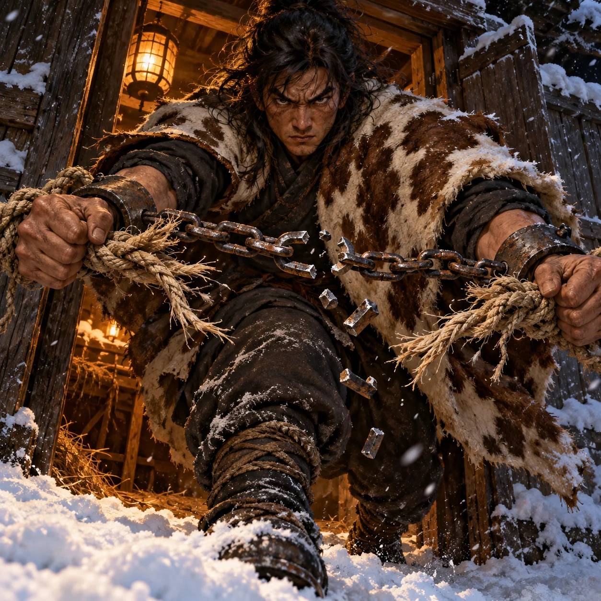
Formidable large youth in a cow-hide cloak breaking his binding rope and chain, using separate documented motifs without carcass gore.
Aura: Physical chain/rope breaking c03/c11 plus cowhide snow depiction c06 conveys documented supernatural strength without invented oni horns/aura.
Native and 200px inspected: one formidable young adult with one head/two eyes/two arms/two legs, opaque clothing and intact cowhide mantle; no horns/carcass invented. Wrists pull apart snapping metal chain and fraying rope, falling physical fragments, boot steps into snow. Face and chainbreak dominate at 200px, clearly legendary strength rather than ordinary man. No text, glow, weapons, victims or gore. Seven Sangar checks pass.
Review sumberONE original square premium painterly cinematic Mitoloka illustration of Kidōmaru, the formidable Japanese oni youth who breaks rope and metal chains. ANATOMY: ONE formidable large ADULT-LOOKING YOUTH, one head, two natural dark eyes, TWO arms and TWO legs; fierce weathered youthful face, long disordered dark hair, NO invented horns/tusks/extra eyes. Fully opaque dark cloth tunic and trousers beneath an INTACT coarse brown-and-ivory COW-HIDE mantle, no animal head, hooves, carcass or wounds [kidomaru-c06,kidomaru-c13,kidomaru-c15]. MOMENT: Burst out of a shadowed stable doorway toward viewer, wrench his two bound wrists APART so a METAL CHAIN snaps at one clear link and a thick ROPE frays apart, metal fragments fall physically and taut rope fibres separate. Hands clenched, elbows wide, eyes glaring down toward viewer, one boot plants in snow. POWER: documented physical strength breaking his binding rope and metal chain; NO glow, beams or aura [kidomaru-c03,kidomaru-c11]. SCALE & CAMERA: extreme low close angle; intense face, two wrist cuffs, snapped chain and cowhide mantle dominate square. Human youth scale, not invented giant, doorway reference behind. LIGHT & WEATHER: single warm lantern from doorway rakes face and flying broken iron link, deep walnut shadows against cold snow; ordinary blown snow and breath. SURFACE: rough intact cow hide, thick rope fibres, rusty chain, coarse opaque clothing, wet dark hair, compacted snow. SETTING: editorial snow-covered stable doorway, using documented cowhide-in-snow motif [kidomaru-c06]. MOOD: dangerous imposing legendary strength in decisive escape, never ordinary relaxed man, moviehero, cute or decorative. No other people, weapons, animal injury, blood or gore. HARD CONSTRAINTS: no text, lettering, inscriptions, logo, border, frame or watermark; no extra heads, limbs or fingers; no design borrowed from any film, game, anime or comic; no nudity or explicit gore; no generic glow aura, neon outline or energy ribbons. Premium painterly brushwork, dark warm walnut and antique gold palette, square composition.
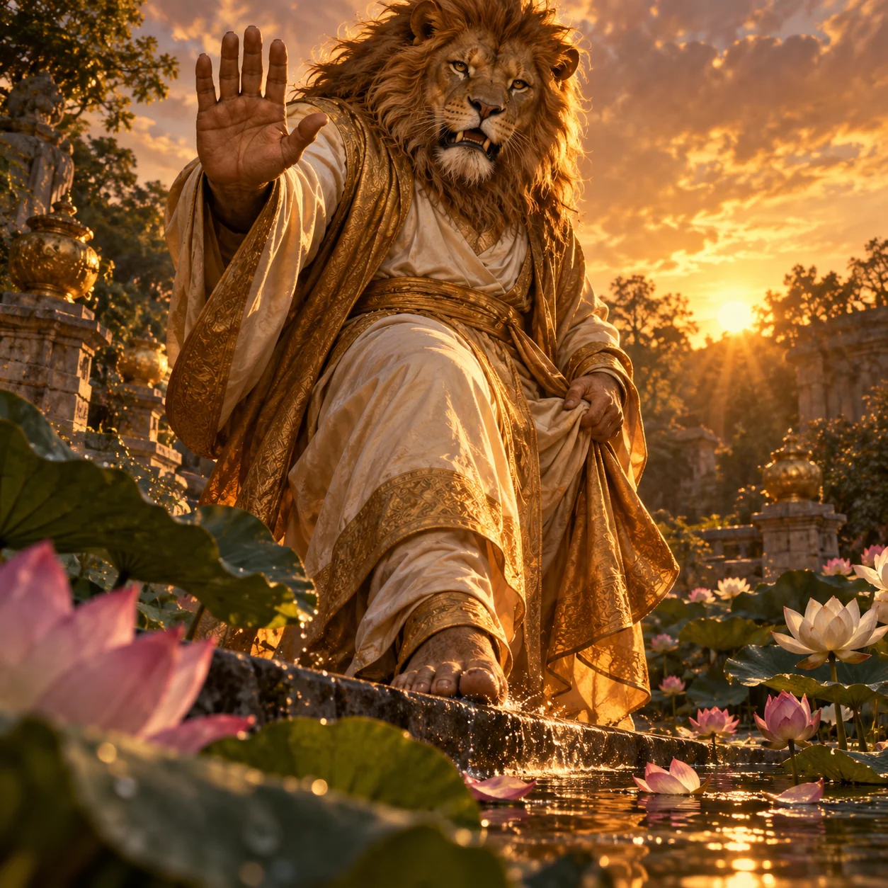
One lion-headed human-bodied guardian of Kubera's lotus ponds, Hindu description; no Jain golden-body attribute mixed.
Aura: Lion-head/human-body c01 and active lotus-pond guardianship c07 provide reverent power without aura.
Native and 200px inspected: one lion head on fully robed human body, two human arms/hands with five fingers, two human legs one foot clearly stepping forward; no paws/tail/extra arms. Forceful protective halt at lotus-pond rim, stern lion gaze and forward step create reverent awe at 200px. No mixed Jain gold-body/Narasimha attributes, aura, text or invented weapon. Seven Sangar checks pass.
Review sumberONE original square premium painterly cinematic Mitoloka illustration of a Kimpurusha, a revered lion-headed human-bodied guardian of Kubera's lotus ponds in Hindu tradition. ANATOMY: ONE sacred being with exactly ONE LION HEAD, TWO natural lion eyes, real thick mane and lion muzzle, HUMAN torso, exactly TWO HUMAN ARMS with human hands and TWO HUMAN LEGS with human feet. Opaque antique-gold and ivory layered cloth robe fully covers body, plain cloth sash, no crown or invented weapon. No paws, tail, wings, extra arms or Narasimha-specific symbols [kimpurushas-c01]. MOMENT: Step firmly across the stone rim of a lotus pond toward viewer, one human palm raised in commanding protective halt, other hand draws robe aside while stepping; lion head lowers with calm grave authority, mouth slightly open showing natural canines but no attack. POWER: serving Kubera and guarding his lotus ponds; no magical attack or glowing body [kimpurushas-c03,kimpurushas-c07]. SCALE & CAMERA: extreme low close angle among lotus leaves; imposing lion face, lifted HUMAN palm and robed torso fill square, normal humanoid scale through framing, no tiny human comparator. LIGHT & WEATHER: one golden sunset shaft outlines living mane and opaque cloth, deep walnut pond shadows, ordinary disturbed water drops and floating lotus petals. SURFACE: coarse living tawny mane, dark lion nose, weathered human palms, opaque woven robes, wet stone and textured lotus leaves. SETTING: Kubera's lotus pond, pink and white living lotus flowers and dark water, no palace text or invented deity figures [kimpurushas-c07]. MOOD: reverential awe and formidable protective authority, never evil demon, cute mascot, ordinary man, statue or decorative portrait. HARD CONSTRAINTS: no text, lettering, inscriptions, logo, border, frame or watermark; no extra heads, limbs or fingers; no design borrowed from any film, game, anime or comic; no nudity or explicit gore; no generic glow aura, neon outline or energy ribbons. Premium painterly brushwork, dark warm walnut and antique gold palette, square composition.
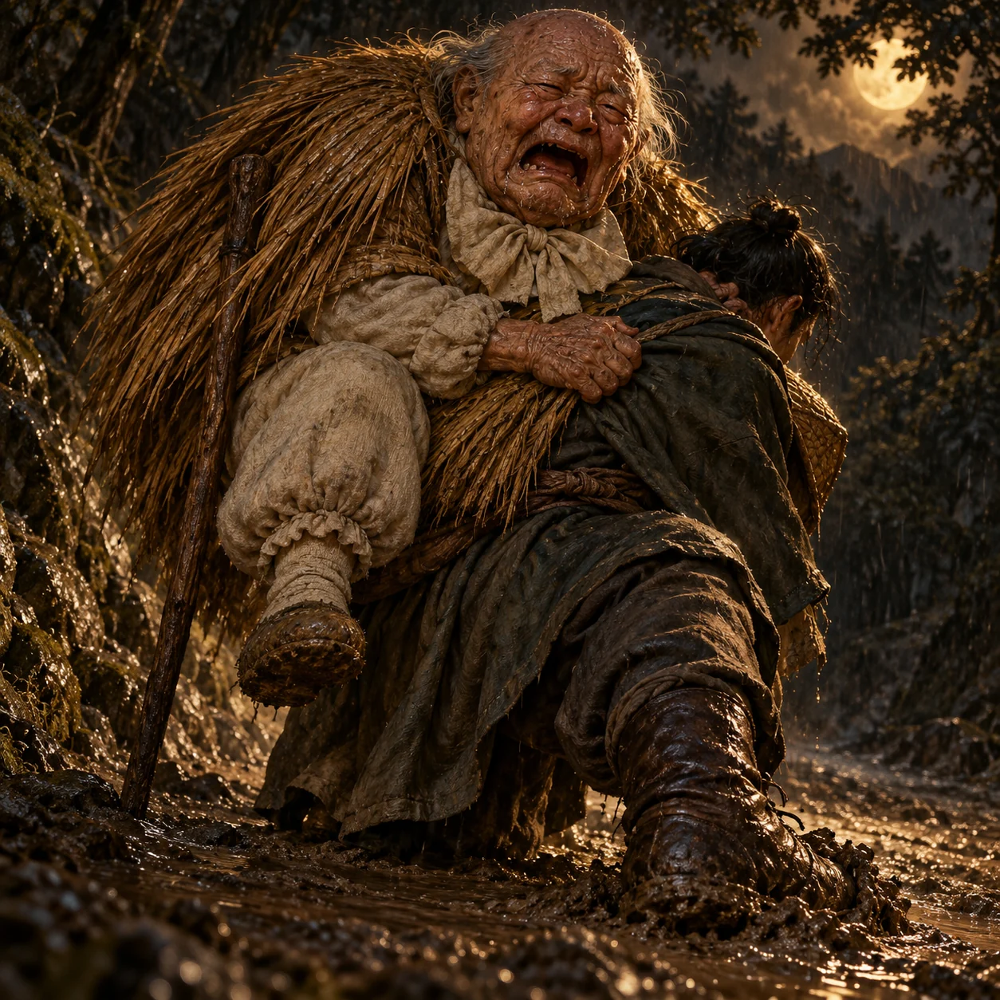
Crying old man in oversized baby clothes and straw raincoat becomes impossibly heavy while held by adult traveler.
Aura: Uncanny old-man/baby clothing c10 and visible impossible heavy burden c03/c11, without aura or baby victim.
Native and 200px inspected: clearly elderly adult crying face, oversized baby-style opaque clothes/bib and straw raincoat, walking stick alongside. Old spirit clings to adult carrier's shoulders, adult kneels with boot deeply sinking in mud under impossible load, no injury. One obvious old-man leg hangs left, other naturally occluded by carrier, no extra anatomy. Subject dominates with uncanny elderly/baby combination and heavy burden at thumbnail; no actual infant, stone transformation, manga design, text or aura. Seven Sangar checks pass.
Review sumberONE original square premium painterly cinematic Mitoloka illustration of Konaki-jiji, the uncanny OLD MAN who cries like a baby and becomes impossibly heavy when picked up on a mountain road. Entirely original design, no manga or anime character. ANATOMY: ONE obviously ELDERLY ADULT MAN with deeply wrinkled face, bald crown, sparse grey hair, two eyes squeezed almost shut and wide CRYING MOUTH. He wears oversized opaque simple BABY-STYLE CLOTHES with large tied bib beneath a coarse STRAW RAINCOAT, holds ONE plain WALKING STICK tucked alongside body. Two arms/two legs, no actual infant, no child [konaki-jiji-c02,konaki-jiji-c10]. MOMENT: The old spirit clings tightly to ONE fully clothed ADULT traveler who has picked him up; traveler sinks to one bent knee under impossible weight, boots dig deeply into muddy road and cloak compresses beneath the burden. Old man's elderly crying face dominates foreground, his two arms grip traveler's shoulders, his two legs hang clearly in baby-style trousers. Adult traveler remains unharmed and face secondary, no crushing or injury. POWER: becomes impossibly heavy and clings once held; show physical body strain, muddy boot depressions and pulled cloth, NO stone transformation, beams or aura [konaki-jiji-c03,konaki-jiji-c11]. SCALE & CAMERA: extreme low close angle, crying OLD MAN spirit and straw raincoat fill upper square, adult carrier partly behind, no giant size or actual baby. LIGHT & WEATHER: one low warm moonbeam through trees rims wrinkled face and straw, deep walnut mountain shadows, ordinary drizzle and mud droplets. SURFACE: deeply aged wrinkled skin, coarse wet straw raincoat, opaque plain baby-style wool cloth, muddy leather boots. SETTING: Tokushima mountain night road, trees secondary [konaki-jiji-c01]. MOOD: intensely uncanny impossible burden and confrontation, never cute baby, comic gag, calm grandfather or decorative pose. No blood, injury or gore. HARD CONSTRAINTS: no text, lettering, inscriptions, logo, border, frame or watermark; no extra heads, limbs or fingers; no design borrowed from any film, game, anime or comic; no nudity or explicit gore; no generic glow aura, neon outline or energy ribbons. Premium painterly brushwork, dark warm walnut and antique gold palette, square composition.